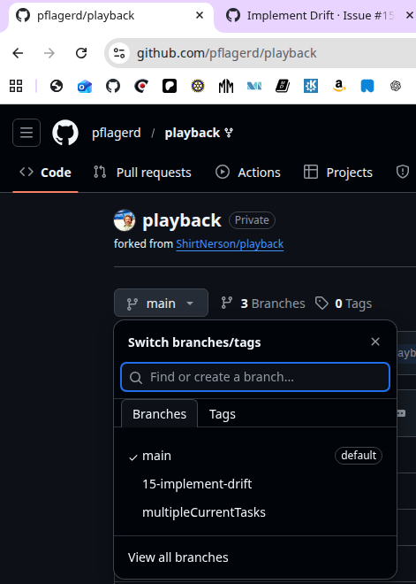
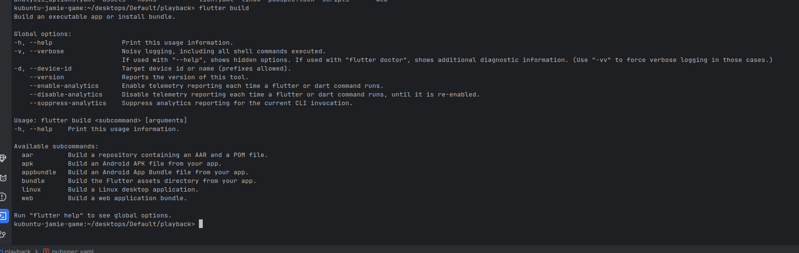
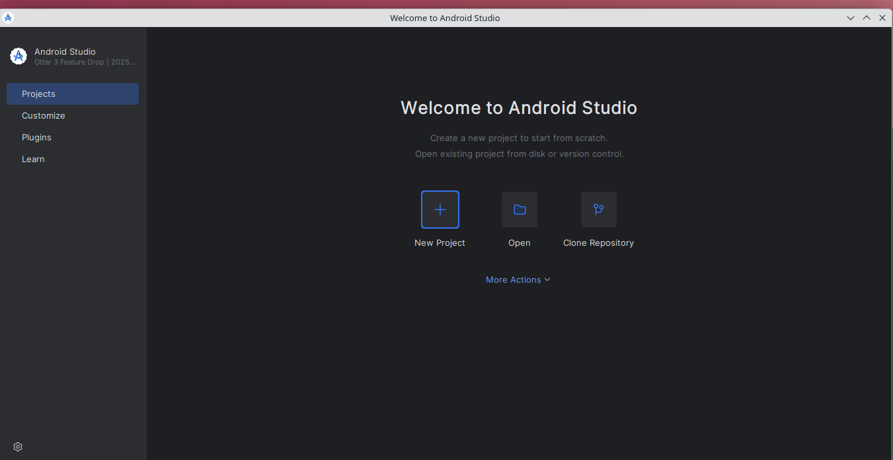
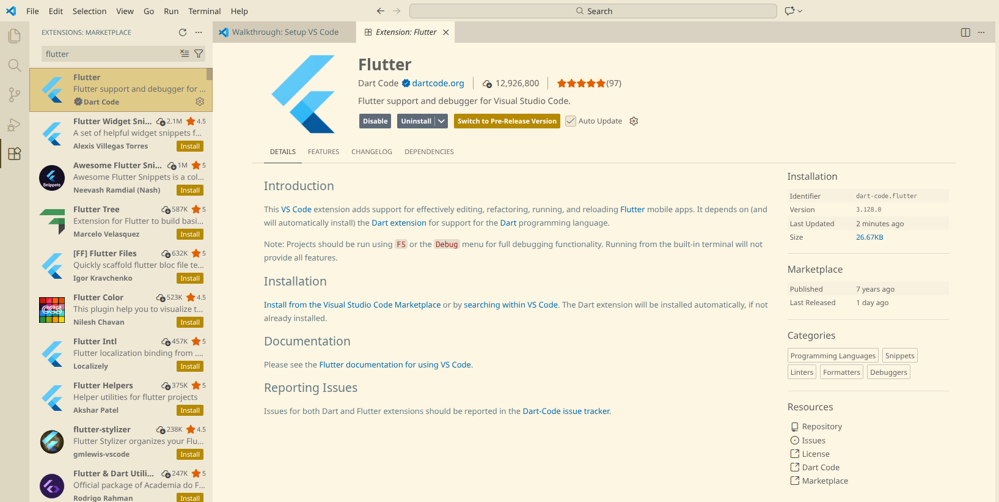
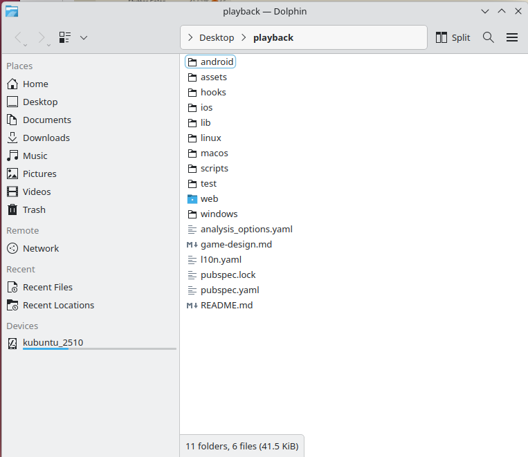
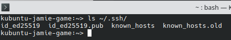
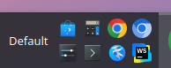

Can we get Playback to build?
Jamie Did some magic. Says I should pull and try building thus:
kubuntu-jamie-game:~/Desktop/playback> git pull
remote: Enumerating objects: 9, done.
remote: Counting objects: 100% (3/3), done.
remote: Total 9 (delta 3), reused 3 (delta 3), pack-reused 6 (from 1)
Unpacking objects: 100% (9/9), 5.36 KiB | 2.68 MiB/s, done.
From github.com:pflagerd/playback
866a9d6..6438554 main -> origin/main
Already up to date.
kubuntu-jamie-game:~/Desktop/playback> flutter run
Connected devices:
Linux (desktop) • linux • linux-x64 • Ubuntu 25.10 6.17.0-14-generic
Chrome (web) • chrome • web-javascript • Google Chrome 145.0.7632.45
[1]: Linux (linux)
[2]: Chrome (chrome)
Please choose one (or "q" to quit): 1
Resolving dependencies...
Downloading packages...
_fe_analyzer_shared 67.0.0 (94.0.0 available)
analyzer 6.4.1 (10.0.2 available)
analyzer_plugin 0.11.3 (0.14.2 available)
audio_session 0.1.25 (0.2.2 available)
build 2.4.1 (4.0.4 available)
build_config 1.1.2 (1.2.0 available)
build_resolvers 2.4.2 (3.0.4 available)
build_runner 2.4.13 (2.11.0 available)
build_runner_core 7.3.2 (9.3.2 available)
characters 1.4.0 (1.4.1 available)
dart_mappable 3.3.1 (4.6.1 available)
dart_mappable_builder 3.3.0 (4.6.4 available)
dart_style 2.3.6 (3.1.5 available)
drift 2.21.0 (2.31.0 available)
drift_dev 2.21.2 (2.31.0 available)
drift_flutter 0.2.7 (0.2.8 available)
file 6.1.4 (7.0.1 available)
flutter_lints 2.0.3 (6.0.0 available)
flutter_sound_platform_interface 9.30.0 (10.3.8 available)
flutter_sound_web 9.30.0 (10.3.8 available)
lints 2.1.1 (6.1.0 available)
matcher 0.12.17 (0.12.18 available)
material_color_utilities 0.11.1 (0.13.0 available)
meta 1.17.0 (1.18.1 available)
shelf_web_socket 2.0.1 (3.0.0 available)
source_gen 1.5.0 (4.2.0 available)
sqlite3 2.9.4 (3.1.4 available)
sqlparser 0.39.2 (0.43.1 available)
test 1.26.3 (1.29.0 available)
test_api 0.7.7 (0.7.9 available)
test_core 0.6.12 (0.6.15 available)
type_plus 1.1.0 (2.1.1 available)
uuid 3.0.7 (4.5.2 available)
Got dependencies!
33 packages have newer versions incompatible with dependency constraints.
Try `flutter pub outdated` for more information.
Launching lib/main.dart on Linux in debug mode...
CMake Error:
Error evaluating generator expression:
$
No target "flutter_sound_plugin"
CMake Generate step failed. Build files cannot be regenerated correctly.
Building Linux application...
Error: Unable to generate build files
kubuntu-jamie-game:~/Desktop/playback>
I was working on my fork, but it didn't have all Jamie's branches, so I trashed it on github.com and recreated it to include all branches.
Can we get Playback to build?
Jamie replaced isr with Drift (See https://github.com/ShirtNerson/playback/issues/15)
I was working on my fork, but it didn't have all Jamie's branches, so I trashed it on github.com and recreated it to include all branches.
The url is the same https://github.com/pflagerd/playback
But now all Jamie's branches show up:
So now I can attempt to reproduce his build results by building from within Android Studio (on Linux):
It appears I need another argument after flutter build.
I guess I'll try an apk, which I believe is APK (Android Package Kit). Essentially a .zip file with everything needed for Android deployment.
flutter build apk
This took a long time. I got bored after about 20 minutes. top still shows java processes, so I guess things are still building...but it never finished.
If I have all the tools, maybe I can build now.
Claude says:
A pubspec.yaml file indicates you're working with a Dart or Flutter project. It's the package and project configuration file for the Dart ecosystem.
Claude suggests I check my flutter setup with flutter doctor
It complains about missing command line tools. With Claude ai's help I find out how to install these from adroid studio.
I learned I can launch android studio from the command line thus: android-studio.
But I also created a quick launch for it.
I then followed the steps it suggested which I have demonstrate in the following video:
Now I will check if that has fixed the issue in flutter
When I reran flutter doctor, it was from a WebStorm terminal. Whatever was happening, everything on the VM went semi-frozen.
WebStorm was terminated by the OS and an "Out of Memory" dialog was displayed.
After a little research, it became clear that WebStorm and Android Studio cannot run on the same VM. They're both memory hogs.
According to top the VM only has 7936 MiB of memory, of which only 173 MiB is free.
I wonder if I can increase the VM's memory?
Answer is Yes. I doubled it.
Let's try flutter doctor again:
I guess we can fix the licensing complaint:
kubuntu-jamie-game:~/Desktop/playback> flutter doctor --android-licenses [=======================================] 100% Computing updates... 6 of 7 SDK package licenses not accepted. Review licenses that have not been accepted (y/N)? y 1/6: License android-googletv-license: --------------------------------------- Terms and Conditions This is the Google TV Add-on for the Android Software Development Kit License Agreement. 1. Introduction 1.1 The Google TV Add-on for the Android Software Development Kit (referred to in this License Agreement as the "Google TV Add-on" and specifically including the Android system files, packaged APIs, and Google APIs add-ons) is licensed to you subject to the terms of this License Agreement. This License Agreement forms a legally binding contract between you and Google in relation to your use of the Google TV Add-on. 1.2 "Google" means Google Inc., a Delaware corporation with principal place of business at 1600 Amphitheatre Parkway, Mountain View, CA 94043, United States. 2. Accepting this License Agreement 2.1 In order to use the Google TV Add-on, you must first agree to this License Agreement. You may not use the Google TV Add-on if you do not accept this License Agreement. 2.2 You can accept this License Agreement by: (A) clicking to accept or agree to this License Agreement, where this option is made available to you; or (B) by actually using the Google TV Add-on. In this case, you agree that use of the Google TV Add-on constitutes acceptance of the License Agreement from that point onwards. 2.3 You may not use the Google TV Add-on and may not accept the Licensing Agreement if you are a person barred from receiving the Google TV Add-on under the laws of the United States or other countries including the country in which you are resident or from which you use the Google TV Add-on. 2.4 If you are agreeing to be bound by this License Agreement on behalf of your employer or other entity, you represent and warrant that you have full legal authority to bind your employer or such entity to this License Agreement. If you do not have the requisite authority, you may not accept the Licensing Agreement or use the Google TV Add-on on behalf of your employer or other entity. 3. Google TV Add-on License from Google 3.1 Subject to the terms of this License Agreement, Google grants you a limited, worldwide, royalty-free, non- assignable and non-exclusive license to use the Google TV Add-on solely to develop applications to run on the Google TV platform. 3.2 You agree that Google or third parties own all legal right, title and interest in and to the Google TV Add-on, including any Intellectual Property Rights that subsist in the Google TV Add-on. "Intellectual Property Rights" means any and all rights under patent law, copyright law, trade secret law, trademark law, and any and all other proprietary rights. Google reserves all rights not expressly granted to you. 3.3 Except to the extent required by applicable third party licenses, you may not copy (except for backup purposes), modify, adapt, redistribute, decompile, reverse engineer, disassemble, or create derivative works of the Google TV Add-on or any part of the Google TV Add-on. Except to the extent required by applicable third party licenses, you may not load any part of the Google TV Add-on onto a mobile handset, television, or any other hardware device except a personal computer, combine any part of the Google TV Add-on with other software, or distribute any software or device incorporating a part of the Google TV Add-on. 3.4 Use, reproduction and distribution of components of the Google TV Add-on licensed under an open source software license are governed solely by the terms of that open source software license and not this License Agreement. 3.5 You agree that the form and nature of the Google TV Add-on that Google provides may change without prior notice to you and that future versions of the Google TV Add-on may be incompatible with applications developed on previous versions of the Google TV Add-on. You agree that Google may stop (permanently or temporarily) providing the Google TV Add-on (or any features within the Google TV Add-on) to you or to users generally at Google's sole discretion, without prior notice to you. 3.6 Nothing in this License Agreement gives you a right to use any of Google's or it’s licensors’ trade names, trademarks, service marks, logos, domain names, or other distinctive brand features. 3.7 You agree that you will not remove, obscure, or alter any proprietary rights notices (including copyright and trademark notices) that may be affixed to or contained within the Google TV Add-on. 4. Use of the Google TV Add-on by You 4.1 Google agrees that it obtains no right, title or interest from you (or your licensors) under this License Agreement in or to any software applications that you develop using the Google TV Add-on, including any intellectual property rights that subsist in those applications. 4.2 You agree to use the Google TV Add-on and write applications only for purposes that are permitted by (a) this License Agreement and (b) any applicable law, regulation or generally accepted practices or guidelines in the relevant jurisdictions (including any laws regarding the export of data or software to and from the United States or other relevant countries). 4.3 You agree that if you use the Google TV Add-on to develop applications for general public users, you will protect the privacy and legal rights of those users. If the users provide you with user names, passwords, or other login information or personal information, your must make the users aware that the information will be available to your application, and you must provide legally adequate privacy notice and protection for those users. If your application stores personal or sensitive information provided by users, it must do so securely. If the user provides your application with Google Account information, your application may only use that information to access the user's Google Account when, and for the limited purposes for which, the user has given you explicit permission to do so. 4.4 You agree that you will not engage in any activity with the Google TV Add-on, including the development or distribution of an application, that interferes with, disrupts, damages, or accesses in an unauthorized manner the servers, networks, or other properties or services of any third party including, but not limited to, Google, Multichannel Video Program Distributors or any mobile communications carrier. 4.5 You agree that you are solely responsible for (and that Google has no responsibility to you or to any third party for) any data, content, or resources that you create, transmit or display through the Google TV platform and/or applications for the Google TV platform, and for the consequences of your actions (including any loss or damage which Google may suffer) by doing so. 4.6 You agree that you are solely responsible for (and that Google has no responsibility to you or to any third party for) any breach of your obligations under this License Agreement, any applicable third party contract or Terms of Service, or any applicable law or regulation, and for the consequences (including any loss or damage which Google or any third party may suffer) of any such breach. 5. Your Developer Credentials 5.1 You agree that you are responsible for maintaining the confidentiality of any developer credentials that may be issued to you by Google or which you may choose yourself and that you will be solely responsible for all applications that are developed under your developer credentials. 6. Privacy and Information 6.1 In order to continually innovate and improve the Google TV Add-on, Google may collect certain usage statistics from the software including but not limited to a unique identifier, associated IP address, version number of the software, and information on which tools and/or services in the Google TV Add-on are being used and how they are being used. Before any of this information is collected, the Google TV Add-on will notify you and seek your consent. If you withhold consent, the information will not be collected. 6.2 The data collected is examined in the aggregate to improve the Google TV Add-on and is maintained in accordance with Google's Privacy Policy. 7. Third Party Applications for the Google TV Platform 7.1 If you use the Google TV Add-on to run applications developed by a third party or that access data, content or resources provided by a third party, you agree that Google is not responsible for those applications, data, content, or resources. You understand that all data, content or resources which you may access through such third party applications are the sole responsibility of the person from which they originated and that Google is not liable for any loss or damage that you may experience as a result of the use or access of any of those third party applications, data, content, or resources. 7.2 You should be aware the data, content, and resources presented to you through such a third party application may be protected by intellectual property rights which are owned by the providers (or by other persons or companies on their behalf). You may not modify, rent, lease, loan, sell, distribute or create derivative works based on these data, content, or resources (either in whole or in part) unless you have been specifically given permission to do so by the relevant owners. 7.3 You acknowledge that your use of such third party applications, data, content, or resources may be subject to separate terms between you and the relevant third party. In that case, this License Agreement does not affect your legal relationship with these third parties. 8. Using Google TV APIs 8.1 If you use any Google TV API to retrieve data from Google, you acknowledge that the data (“Google TV API Content”) may be protected by intellectual property rights which are owned by Google or those parties that provide the data (or by other persons or companies on their behalf). Your use of any such API may be subject to additional Terms of Service. You may not modify, rent, lease, loan, sell, distribute or create derivative works based on this data (either in whole or in part) unless allowed by the relevant Terms of Service. Some portions of the Google TV API Content are licensed to Google by third parties, including but not limited to Tribune Media Services 8.2 If you use any API to retrieve a user's data from Google, you acknowledge and agree that you shall retrieve data only with the user's explicit consent and only when, and for the limited purposes for which, the user has given you permission to do so. 8.3 Except as explicitly permitted in Section 3 (Google TV Add-on License from Google), you must: (a) not modify nor format the Google TV API Content except to the extent reasonably and technically necessary to optimize the display such Google TV API Content in your application; (b) not edit the Google TV API Content in a manner that renders the Google TV API Content inaccurate of alters its inherent meaning (provided that displaying excerpts will not violate the foregoing); or (c) not create any commercial audience measurement tool or service using the Google TV API Content 9. Terminating this License Agreement 9.1 This License Agreement will continue to apply until terminated by either you or Google as set out below. 9.2 If you want to terminate this License Agreement, you may do so by ceasing your use of the Google TV Add-on and any relevant developer credentials. 9.3 Google may at any time, terminate this License Agreement with you if: (A) you have breached any provision of this License Agreement; or (B) Google is required to do so by law; or (C) the partner with whom Google offered certain parts of Google TV Add-on (such as APIs) to you has terminated its relationship with Google or ceased to offer certain parts of the Google TV Add-on to you; or (D) Google decides to no longer providing the Google TV Add-on or certain parts of the Google TV Add-on to users in the country in which you are resident or from which you use the service, or the provision of the Google TV Add-on or certain Google TV Add-on services to you by Google is, in Google's sole discretion, no longer commercially viable. 9.4 When this License Agreement comes to an end, all of the legal rights, obligations and liabilities that you and Google have benefited from, been subject to (or which have accrued over time whilst this License Agreement has been in force) or which are expressed to continue indefinitely, shall be unaffected by this cessation, and the provisions of paragraph 14.7 shall continue to apply to such rights, obligations and liabilities indefinitely. 10. DISCLAIMER OF WARRANTIES 10.1 YOU EXPRESSLY UNDERSTAND AND AGREE THAT YOUR USE OF THE GOOGLE TV ADD-ON IS AT YOUR SOLE RISK AND THAT THE GOOGLE TV ADD-ON IS PROVIDED "AS IS" AND "AS AVAILABLE" WITHOUT WARRANTY OF ANY KIND FROM GOOGLE. 10.2 YOUR USE OF THE GOOGLE TV ADD-ON AND ANY MATERIAL DOWNLOADED OR OTHERWISE OBTAINED THROUGH THE USE OF THE GOOGLE TV ADD-ON IS AT YOUR OWN DISCRETION AND RISK AND YOU ARE SOLELY RESPONSIBLE FOR ANY DAMAGE TO YOUR COMPUTER SYSTEM OR OTHER DEVICE OR LOSS OF DATA THAT RESULTS FROM SUCH USE. 10.3 GOOGLE FURTHER EXPRESSLY DISCLAIMS ALL WARRANTIES AND CONDITIONS OF ANY KIND, WHETHER EXPRESS OR IMPLIED, INCLUDING, BUT NOT LIMITED TO THE IMPLIED WARRANTIES AND CONDITIONS OF MERCHANTABILITY, FITNESS FOR A PARTICULAR PURPOSE AND NON-INFRINGEMENT. 11. LIMITATION OF LIABILITY 11.1 YOU EXPRESSLY UNDERSTAND AND AGREE THAT GOOGLE, ITS SUBSIDIARIES AND AFFILIATES, AND ITS LICENSORS SHALL NOT BE LIABLE TO YOU UNDER ANY THEORY OF LIABILITY FOR ANY DIRECT, INDIRECT, INCIDENTAL, SPECIAL CONSEQUENTIAL OR EXEMPLARY DAMAGES THAT MAY BE INCURRED BY YOU, INCLUDING ANY LOSS OF DATA, WHETHER OR NOT GOOGLE OR ITS REPRESENTATIVES HAVE BEEN ADVISED OF OR SHOULD HAVE BEEN AWARE OF THE POSSIBILITY OF ANY SUCH LOSSES ARISING. 12. Indemnification 12.1 To the maximum extent permitted by law, you agree to defend, indemnify and hold harmless Google, its affiliates and their respective directors, officers, employees and agents from and against any and all claims, actions, suits or proceedings, as well as any and all losses, liabilities, damages, costs and expenses (including reasonable attorneys fees) arising out of or accruing from (a) your use of the Google TV Add-on, (b) any application you develop on the Google TV Add-on that infringes any copyright, trademark, trade secret, trade dress, patent or other intellectual property right of any person or defames any person or violates their rights of publicity or privacy, and (c) any non-compliance by you with this License Agreement. 13. Changes to the License Agreement 13.1 Google may make changes to the License Agreement as it distributes new versions of the Google TV Add-on. 14. General Legal Terms 14.1 This License Agreement constitute the whole legal agreement between you and Google and govern your use of the Google TV Add-on (excluding any services which Google may provide to you under a separate written agreement), and completely replace any prior agreements between you and Google in relation to the Google TV Add-on. 14.2 You agree that if Google does not exercise or enforce any legal right or remedy which is contained in this License Agreement (or which Google has the benefit of under any applicable law), this will not be taken to be a formal waiver of Google's rights and that those rights or remedies will still be available to Google. 14.3 If any court of law, having the jurisdiction to decide on this matter, rules that any provision of this License Agreement is invalid, then that provision will be removed from this License Agreement without affecting the rest of this License Agreement. The remaining provisions of this License Agreement will continue to be valid and enforceable. 14.4 You acknowledge and agree that Google’s API data licensors and each member of the group of companies of which Google is the parent shall be third party beneficiaries to this License Agreement and that such other companies shall be entitled to directly enforce, and rely upon, any provision of this License Agreement that confers a benefit on (or rights in favor of) them. Other than this, no other person or company shall be third party beneficiaries to this License Agreement. 14.5 EXPORT RESTRICTIONS. THE GOOGLE TV ADD-ON IS SUBJECT TO UNITED STATES EXPORT LAWS AND REGULATIONS. YOU MUST COMPLY WITH ALL DOMESTIC AND INTERNATIONAL EXPORT LAWS AND REGULATIONS THAT APPLY TO THE GOOGLE TV ADD-ON. THESE LAWS INCLUDE RESTRICTIONS ON DESTINATIONS, END USERS AND END USE. 14.6 The rights granted in this License Agreement may not be assigned or transferred by either you or Google without the prior written approval of the other party. Neither you nor Google shall be permitted to delegate their responsibilities or obligations under this License Agreement without the prior written approval of the other party. 14.7 This License Agreement, and your relationship with Google under this License Agreement, shall be governed by the laws of the State of California without regard to its conflict of laws provisions. You and Google agree to submit to the exclusive jurisdiction of the courts located within the county of Santa Clara, California to resolve any legal matter arising from this License Agreement. Notwithstanding this, you agree that Google shall still be allowed to apply for injunctive remedies (or an equivalent type of urgent legal relief) in any jurisdiction. August 15, 2011 --------------------------------------- Accept? (y/N): y 2/6: License android-googlexr-license: --------------------------------------- To get started with the Android XR Emulator System Image SDK, you must agree to the following terms and conditions. As described below, please note that this is a preview, emulated version of the Android XR OS, subject to change, that you use at your own risk. This is the Android XR Emulator System Image SDK License Agreement 1. Introduction 1.1 The Android Android XR Emulator System Image SDK (referred to in the License Agreement as the "SDK" and specifically including the Android system files,, packaged APIs, library files (if and when they are made available), and Google applications and APIs add-ons) is licensed to you subject to the terms of the License Agreement. The License Agreement forms a legally binding contract between you and Google in relation to your use of the SDK. 1.2 "Android" means the Android software stack for devices, as made available under the Android Open Source Project, which is located at the following URL: https://source.android.com/, as updated from time to time. 1.3 "Google" means Google LLC, organized under the laws of the State of Delaware, USA, and operating under the laws of the USA with principal place of business at 1600 Amphitheatre Parkway, Mountain View, CA 94043, USA. 2. Accepting this License Agreement 2.1 In order to use the SDK, you must first agree to the License Agreement. You may not use the SDK if you do not accept the License Agreement. 2.2 By clicking to accept and/or using this SDK, you hereby agree to the terms of the License Agreement. 2.3 You may not use the SDK and may not accept the License Agreement if you are a person barred from receiving the SDK under the laws of the United States or other countries, including the country in which you are resident or from which you use the SDK. 2.4 If you are agreeing to be bound by the License Agreement on behalf of your employer or other entity, you represent and warrant that you have full legal authority to bind your employer or such entity to the License Agreement. If you do not have the requisite authority, you may not accept the License Agreement or use the SDK on behalf of your employer or other entity. 3. SDK License from Google 3.1 Subject to the terms of the License Agreement, Google grants you a limited, worldwide, royalty-free, non-assignable, non-exclusive, and non-sublicensable license to use the SDK solely to develop applications for Android XR. 3.2 You may not use this SDK to develop applications for other platforms or to develop another SDK. You are of course free to develop applications for other platforms provided that this SDK is not used for that purpose. 3.3 You agree that Google or third parties own all legal right, title and interest in and to the SDK, including any Intellectual Property Rights that subsist in the SDK. "Intellectual Property Rights" means any and all rights under patent law, copyright law, trade secret law, trademark law, and any and all other proprietary rights. Google reserves all rights not expressly granted to you. 3.4 You may not use the SDK for any purpose not expressly permitted by the License Agreement. Except to the extent required by applicable third party licenses, you may not (a) copy (except for backup purposes), modify, adapt, redistribute, decompile, reverse engineer, disassemble, or create derivative works of the SDK or any part of the SDK; or (b) load any part of the SDK onto a mobile handset or any other hardware device except a personal computer, combine any part of the SDK with other software, or distribute any software or device incorporating a part of the SDK. 3.5 Use, reproduction and distribution of components of the SDK licensed under an open source software license are governed solely by the terms of that open source software license and not the License Agreement. You agree to remain a licensee in good standing in regard to such open source software licenses under all the rights granted and to refrain from any actions that may terminate, suspend, or breach such rights. 3.6 You agree that the form and nature of the SDK that Google provides may change without prior notice to you and that future versions of the SDK may be incompatible with applications developed on previous versions of the SDK. You agree that Google may stop (permanently or temporarily) providing the SDK (or any features within the SDK) to you or to users generally at Google's sole discretion, without prior notice to you. 3.7 Nothing in the License Agreement gives you a right to use any of Google's trade names, trademarks, service marks, logos, domain names, or other distinctive brand features. 3.8 You agree that you will not remove, obscure, or alter any proprietary rights notices (including copyright and trademark notices) that may be affixed to or contained within the SDK. 4. Use of the SDK by You 4.1 Google agrees that it obtains no right, title or interest from you (or your licensors) under the License Agreement in or to any software applications that you develop using the SDK, including any intellectual property rights that subsist in those applications. 4.2 You agree to use the SDK and write applications only for purposes that are permitted by (a) the License Agreement and (b) any applicable law, regulation or generally accepted practices or guidelines in the relevant jurisdictions (including any laws regarding the export of data or software to and from the United States or other relevant countries). 4.3 You agree that if you use the SDK to develop applications for general public users, you will protect the privacy and legal rights of those users. If the users provide you with user names, passwords, or other login information or personal information, you must make the users aware that the information will be available to your application, and you must provide legally adequate privacy notice and protection for those users. If your application stores personal or sensitive information provided by users, it must do so securely. If the user provides your application with Google Account information, your application may only use that information to access the user's Google Account when, and for the limited purposes for which, the user has given you permission to do so. 4.4 You agree that you will not engage in any activity with the SDK, including the development or distribution of an application, that interferes with, disrupts, damages, or accesses in an unauthorized manner the servers, networks, or other properties or services of any third party including, but not limited to, Google or any mobile communications carrier. 4.5 You agree that you are solely responsible for (and that Google has no responsibility to you or to any third party for) any data, content, or resources that you create, transmit or display through Android and/or applications for Android, and for the consequences of your actions (including any loss or damage which Google may suffer) by doing so. 4.6 You agree that you are solely responsible for (and that Google has no responsibility to you or to any third party for) any breach of your obligations under the License Agreement, any applicable third party contract or Terms of Service, or any applicable law or regulation, and for the consequences (including any loss or damage which Google or any third party may suffer) of any such breach. 4.7 The SDK is in development, and your testing and feedback are an important part of the development process. By using the SDK, you acknowledge that implementation of some features are still under development and that you should not rely on the SDK having the full functionality of a stable release. 5. Your Developer Credentials 5.1 You agree that you are responsible for maintaining the confidentiality of any developer credentials that may be issued to you by Google or which you may choose yourself and that you will be solely responsible for all applications that are developed under your developer credentials. 6. Privacy and Information 6.1 In order to continually innovate and improve the SDK, Google may collect certain usage statistics from the software including but not limited to a unique identifier, associated IP address, version number of the software, and information on which tools and/or services in the SDK are being used and how they are being used. Before any of this information is collected, the SDK will notify you and seek your consent. If you withhold consent, the information will not be collected. 6.2 The data collected is examined in the aggregate to improve the SDK and is maintained in accordance with Google's Privacy Policy, which is located at the following URL: https://policies.google.com/privacy 6.3 Anonymized and aggregated sets of the data may be shared with Google partners to improve the SDK. 7. Third Party Applications 7.1 If you use the SDK to run applications developed by a third party or that access data, content or resources provided by a third party, you agree that Google is not responsible for those applications, data, content, or resources. You understand that all data, content or resources which you may access through such third party applications are the sole responsibility of the person from which they originated and that Google is not liable for any loss or damage that you may experience as a result of the use or access of any of those third party applications, data, content, or resources. 7.2 You should be aware that the data, content, and resources presented to you through such a third party application may be protected by intellectual property rights which are owned by the providers (or by other persons or companies on their behalf). You may not modify, rent, lease, loan, sell, distribute or create derivative works based on these data, content, or resources (either in whole or in part) unless you have been specifically given permission to do so by the relevant owners. 7.3 You acknowledge that your use of such third party applications, data, content, or resources may be subject to separate terms between you and the relevant third party. In that case, the License Agreement does not affect your legal relationship with these third parties. 8. Using Android APIs 8.1 Google Data APIs 8.1.1 If you use any API to retrieve data from Google, you acknowledge that the data may be protected by intellectual property rights which are owned by Google or those parties that provide the data (or by other persons or companies on their behalf). Your use of any such API may be subject to additional Terms of Service. You may not modify, rent, lease, loan, sell, distribute or create derivative works based on this data (either in whole or in part) unless allowed by the relevant Terms of Service. 8.1.2 If you use any API to retrieve a user's data from Google, you acknowledge and agree that you shall retrieve data only with the user's explicit consent and only when, and for the limited purposes for which, the user has given you permission to do so. If you use the Android Recognition Service API, documented at the following URL: https://developer.android.com/reference/android/speech/RecognitionService, as updated from time to time, you acknowledge that the use of the API is subject to the Data Processing Addendum for Products where Google is a Data Processor, which is located at the following URL: https://privacy.google.com/businesses/gdprprocessorterms/, as updated from time to time. By clicking to accept, you hereby agree to the terms of the Data Processing Addendum for Products where Google is a Data Processor. 9. Terminating this License Agreement 9.1 The License Agreement will continue to apply until terminated by either you or Google as set out below. 9.2 If you want to terminate the License Agreement, you may do so by ceasing your use of the SDK and any relevant developer credentials. 9.3 Google may at any time, terminate the License Agreement with you if: (A) you have breached any provision of the License Agreement; or (B) Google is required to do so by law; or (C) the partner with whom Google offered certain parts of SDK (such as APIs) to you has terminated its relationship with Google or ceased to offer certain parts of the SDK to you; or (D) Google decides to no longer provide the SDK or certain parts of the SDK to users in the country in which you are resident or from which you use the service, or the provision of the SDK or certain SDK services to you by Google is, in Google's sole discretion, no longer commercially viable. 9.4 When the License Agreement comes to an end, all of the legal rights, obligations and liabilities that you and Google have benefited from, been subject to (or which have accrued over time whilst the License Agreement has been in force) or which are expressed to continue indefinitely, shall be unaffected by this cessation, and the provisions of paragraph 14.7 shall continue to apply to such rights, obligations and liabilities indefinitely. 10. DISCLAIMER OF WARRANTIES 10.1 YOU EXPRESSLY UNDERSTAND AND AGREE THAT YOUR USE OF THE SDK IS AT YOUR SOLE RISK AND THAT THE SDK IS PROVIDED "AS IS" AND "AS AVAILABLE" WITHOUT WARRANTY OF ANY KIND FROM GOOGLE. 10.2 YOUR USE OF THE SDK AND ANY MATERIAL DOWNLOADED OR OTHERWISE OBTAINED THROUGH THE USE OF THE SDK IS AT YOUR OWN DISCRETION AND RISK AND YOU ARE SOLELY RESPONSIBLE FOR ANY DAMAGE TO YOUR COMPUTER SYSTEM OR OTHER DEVICE OR LOSS OF DATA THAT RESULTS FROM SUCH USE. 10.3 GOOGLE FURTHER EXPRESSLY DISCLAIMS ALL WARRANTIES AND CONDITIONS OF ANY KIND, WHETHER EXPRESS OR IMPLIED, INCLUDING, BUT NOT LIMITED TO THE IMPLIED WARRANTIES AND CONDITIONS OF MERCHANTABILITY, FITNESS FOR A PARTICULAR PURPOSE AND NON-INFRINGEMENT. 11. LIMITATION OF LIABILITY 11.1 YOU EXPRESSLY UNDERSTAND AND AGREE THAT GOOGLE, ITS SUBSIDIARIES AND AFFILIATES, AND ITS LICENSORS SHALL NOT BE LIABLE TO YOU UNDER ANY THEORY OF LIABILITY FOR ANY DIRECT, INDIRECT, INCIDENTAL, SPECIAL, CONSEQUENTIAL OR EXEMPLARY DAMAGES THAT MAY BE INCURRED BY YOU, INCLUDING ANY LOSS OF DATA, WHETHER OR NOT GOOGLE OR ITS REPRESENTATIVES HAVE BEEN ADVISED OF OR SHOULD HAVE BEEN AWARE OF THE POSSIBILITY OF ANY SUCH LOSSES ARISING. 12. Indemnification 12.1 To the maximum extent permitted by law, you agree to defend, indemnify and hold harmless Google, its affiliates and their respective directors, officers, employees and agents from and against any and all claims, actions, suits or proceedings, as well as any and all losses, liabilities, damages, costs and expenses (including reasonable attorneys fees) arising out of or accruing from (a) your use of the SDK, (b) any application you develop on the SDK that infringes any copyright, trademark, trade secret, trade dress, patent or other intellectual property right of any person or defames any person or violates their rights of publicity or privacy, and (c) any non-compliance by you with the License Agreement. 13. Changes to the License Agreement 13.1 Google may make changes to the License Agreement as it distributes new versions of the SDK. When these changes are made, Google will make a new version of the License Agreement available on the website where the SDK is made available. 14. General Legal Terms 14.1 The License Agreement constitutes the whole legal agreement between you and Google and governs your use of the SDK (excluding any services which Google may provide to you under a separate written agreement), and completely replaces any prior agreements between you and Google in relation to the SDK. 14.2 You agree that if Google does not exercise or enforce any legal right or remedy which is contained in the License Agreement (or which Google has the benefit of under any applicable law), this will not be taken to be a formal waiver of Google's rights and that those rights or remedies will still be available to Google. 14.3 If any court of law, having the jurisdiction to decide on this matter, rules that any provision of the License Agreement is invalid, then that provision will be removed from the License Agreement without affecting the rest of the License Agreement. The remaining provisions of the License Agreement will continue to be valid and enforceable. 14.4 You acknowledge and agree that each member of the group of companies of which Google is the parent shall be third party beneficiaries to the License Agreement and that such other companies shall be entitled to directly enforce, and rely upon, any provision of the License Agreement that confers a benefit on (or rights in favor of) them. Other than this, no other person or company shall be third party beneficiaries to the License Agreement. 14.5 EXPORT RESTRICTIONS. THE SDK IS SUBJECT TO UNITED STATES EXPORT LAWS AND REGULATIONS. YOU MUST COMPLY WITH ALL DOMESTIC AND INTERNATIONAL EXPORT LAWS AND REGULATIONS THAT APPLY TO THE SDK. THESE LAWS INCLUDE RESTRICTIONS ON DESTINATIONS, END USERS AND END USE. 14.6 The rights granted in the License Agreement may not be assigned or transferred by either you or Google without the prior written approval of the other party. Neither you nor Google shall be permitted to delegate their responsibilities or obligations under the License Agreement without the prior written approval of the other party. 14.7 The License Agreement, and your relationship with Google under the License Agreement, shall be governed by the laws of the State of California without regard to its conflict of laws provisions. You and Google agree to submit to the exclusive jurisdiction of the courts located within the county of Santa Clara, California to resolve any legal matter arising from the License Agreement. Notwithstanding this, you agree that Google shall still be allowed to apply for injunctive remedies (or an equivalent type of urgent legal relief) in any jurisdiction. --------------------------------------- Accept? (y/N): y 3/6: License android-sdk-arm-dbt-license: --------------------------------------- Terms and Conditions This is the Android Software Development Kit License Agreement 1. Introduction 1.1 The Android Software Development Kit (referred to in the License Agreement as the "SDK" and specifically including the Android system files, packaged APIs, and Google APIs add-ons) is licensed to you subject to the terms of the License Agreement. The License Agreement forms a legally binding contract between you and Google in relation to your use of the SDK. 1.2 "Android" means the Android software stack for devices, as made available under the Android Open Source Project, which is located at the following URL: http://source.android.com/, as updated from time to time. 1.3 A "compatible implementation" means any Android device that (i) complies with the Android Compatibility Definition document, which can be found at the Android compatibility website (http://source.android.com/compatibility) and which may be updated from time to time; and (ii) successfully passes the Android Compatibility Test Suite (CTS). 1.4 "Google" means Google Inc., a Delaware corporation with principal place of business at 1600 Amphitheatre Parkway, Mountain View, CA 94043, United States. 2. Accepting the License Agreement 2.1 In order to use the SDK, you must first agree to the License Agreement. You may not use the SDK if you do not accept the License Agreement. 2.2 By clicking to accept, you hereby agree to the terms of the License Agreement. 2.3 You may not use the SDK and may not accept the License Agreement if you are a person barred from receiving the SDK under the laws of the United States or other countries, including the country in which you are resident or from which you use the SDK. 2.4 If you are agreeing to be bound by the License Agreement on behalf of your employer or other entity, you represent and warrant that you have full legal authority to bind your employer or such entity to the License Agreement. If you do not have the requisite authority, you may not accept the License Agreement or use the SDK on behalf of your employer or other entity. 3. SDK License from Google 3.1 Subject to the terms of the License Agreement, Google grants you a limited, worldwide, royalty-free, non-assignable, non-exclusive, and non-sublicensable license to use the SDK solely to develop applications for compatible implementations of Android. 3.2 You may not use this SDK to develop applications for other platforms (including non-compatible implementations of Android) or to develop another SDK. You are of course free to develop applications for other platforms, including non-compatible implementations of Android, provided that this SDK is not used for that purpose. 3.3 You agree that Google or third parties own all legal right, title and interest in and to the SDK, including any Intellectual Property Rights that subsist in the SDK. "Intellectual Property Rights" means any and all rights under patent law, copyright law, trade secret law, trademark law, and any and all other proprietary rights. Google reserves all rights not expressly granted to you. 3.4 You may not use the SDK for any purpose not expressly permitted by the License Agreement. Except to the extent required by applicable third party licenses, you may not copy (except for backup purposes), modify, adapt, redistribute, decompile, reverse engineer, disassemble, or create derivative works of the SDK or any part of the SDK. 3.5 Use, reproduction and distribution of components of the SDK licensed under an open source software license are governed solely by the terms of that open source software license and not the License Agreement. 3.6 You agree that the form and nature of the SDK that Google provides may change without prior notice to you and that future versions of the SDK may be incompatible with applications developed on previous versions of the SDK. You agree that Google may stop (permanently or temporarily) providing the SDK (or any features within the SDK) to you or to users generally at Google's sole discretion, without prior notice to you. 3.7 Nothing in the License Agreement gives you a right to use any of Google's trade names, trademarks, service marks, logos, domain names, or other distinctive brand features. 3.8 You agree that you will not remove, obscure, or alter any proprietary rights notices (including copyright and trademark notices) that may be affixed to or contained within the SDK. 4. Use of the SDK by You 4.1 Google agrees that it obtains no right, title or interest from you (or your licensors) under the License Agreement in or to any software applications that you develop using the SDK, including any intellectual property rights that subsist in those applications. 4.2 You agree to use the SDK and write applications only for purposes that are permitted by (a) the License Agreement and (b) any applicable law, regulation or generally accepted practices or guidelines in the relevant jurisdictions (including any laws regarding the export of data or software to and from the United States or other relevant countries). 4.3 You agree that if you use the SDK to develop applications for general public users, you will protect the privacy and legal rights of those users. If the users provide you with user names, passwords, or other login information or personal information, you must make the users aware that the information will be available to your application, and you must provide legally adequate privacy notice and protection for those users. If your application stores personal or sensitive information provided by users, it must do so securely. If the user provides your application with Google Account information, your application may only use that information to access the user's Google Account when, and for the limited purposes for which, the user has given you permission to do so. 4.4 You agree that you will not engage in any activity with the SDK, including the development or distribution of an application, that interferes with, disrupts, damages, or accesses in an unauthorized manner the servers, networks, or other properties or services of any third party including, but not limited to, Google or any mobile communications carrier. 4.5 You agree that you are solely responsible for (and that Google has no responsibility to you or to any third party for) any data, content, or resources that you create, transmit or display through Android and/or applications for Android, and for the consequences of your actions (including any loss or damage which Google may suffer) by doing so. 4.6 You agree that you are solely responsible for (and that Google has no responsibility to you or to any third party for) any breach of your obligations under the License Agreement, any applicable third party contract or Terms of Service, or any applicable law or regulation, and for the consequences (including any loss or damage which Google or any third party may suffer) of any such breach. 4.7 This software enables the execution of intellectual property owned by Arm Limited. You agree that your use of the software, that allows execution of ARM Instruction Set Architecture (“ISA”) compliant executables for application development and debug only on x86 desktop, laptop, customer on-premise servers, and customer-procured cloud-based environments. 5. Your Developer Credentials 5.1 You agree that you are responsible for maintaining the confidentiality of any developer credentials that may be issued to you by Google or which you may choose yourself and that you will be solely responsible for all applications that are developed under your developer credentials. 6. Privacy and Information 6.1 In order to continually innovate and improve the SDK, Google may collect certain usage statistics from the software including but not limited to a unique identifier, associated IP address, version number of the software, and information on which tools and/or services in the SDK are being used and how they are being used. Before any of this information is collected, the SDK will notify you and seek your consent. If you withhold consent, the information will not be collected. 6.2 The data collected is examined in the aggregate to improve the SDK and is maintained in accordance with Google's Privacy Policy. 7. Third Party Applications 7.1 If you use the SDK to run applications developed by a third party or that access data, content or resources provided by a third party, you agree that Google is not responsible for those applications, data, content, or resources. You understand that all data, content or resources which you may access through such third party applications are the sole responsibility of the person from which they originated and that Google is not liable for any loss or damage that you may experience as a result of the use or access of any of those third party applications, data, content, or resources. 7.2 You should be aware the data, content, and resources presented to you through such a third party application may be protected by intellectual property rights which are owned by the providers (or by other persons or companies on their behalf). You may not modify, rent, lease, loan, sell, distribute or create derivative works based on these data, content, or resources (either in whole or in part) unless you have been specifically given permission to do so by the relevant owners. 7.3 You acknowledge that your use of such third party applications, data, content, or resources may be subject to separate terms between you and the relevant third party. In that case, the License Agreement does not affect your legal relationship with these third parties. 8. Using Android APIs 8.1 Google Data APIs 8.1.1 If you use any API to retrieve data from Google, you acknowledge that the data may be protected by intellectual property rights which are owned by Google or those parties that provide the data (or by other persons or companies on their behalf). Your use of any such API may be subject to additional Terms of Service. You may not modify, rent, lease, loan, sell, distribute or create derivative works based on this data (either in whole or in part) unless allowed by the relevant Terms of Service. 8.1.2 If you use any API to retrieve a user's data from Google, you acknowledge and agree that you shall retrieve data only with the user's explicit consent and only when, and for the limited purposes for which, the user has given you permission to do so. If you use the Android Recognition Service API, documented at the following URL: https://developer.android.com/reference/android/speech/RecognitionService, as updated from time to time, you acknowledge that the use of the API is subject to the Data Processing Addendum for Products where Google is a Data Processor, which is located at the following URL: https://privacy.google.com/businesses/gdprprocessorterms/, as updated from time to time. By clicking to accept, you hereby agree to the terms of the Data Processing Addendum for Products where Google is a Data Processor. 9. Terminating the License Agreement 9.1 The License Agreement will continue to apply until terminated by either you or Google as set out below. 9.2 If you want to terminate the License Agreement, you may do so by ceasing your use of the SDK and any relevant developer credentials. 9.3 Google may at any time, terminate the License Agreement with you if: (A) you have breached any provision of the License Agreement; or (B) Google is required to do so by law; or (C) the partner with whom Google offered certain parts of SDK (such as APIs) to you has terminated its relationship with Google or ceased to offer certain parts of the SDK to you; or (D) Google decides to no longer provide the SDK or certain parts of the SDK to users in the country in which you are resident or from which you use the service, or the provision of the SDK or certain SDK services to you by Google is, in Google's sole discretion, no longer commercially viable. 9.4 When the License Agreement comes to an end, all of the legal rights, obligations and liabilities that you and Google have benefited from, been subject to (or which have accrued over time whilst the License Agreement has been in force) or which are expressed to continue indefinitely, shall be unaffected by this cessation, and the provisions of paragraph 14.7 shall continue to apply to such rights, obligations and liabilities indefinitely. 10. DISCLAIMER OF WARRANTIES 10.1 YOU EXPRESSLY UNDERSTAND AND AGREE THAT YOUR USE OF THE SDK IS AT YOUR SOLE RISK AND THAT THE SDK IS PROVIDED "AS IS" AND "AS AVAILABLE" WITHOUT WARRANTY OF ANY KIND FROM GOOGLE. 10.2 YOUR USE OF THE SDK AND ANY MATERIAL DOWNLOADED OR OTHERWISE OBTAINED THROUGH THE USE OF THE SDK IS AT YOUR OWN DISCRETION AND RISK AND YOU ARE SOLELY RESPONSIBLE FOR ANY DAMAGE TO YOUR COMPUTER SYSTEM OR OTHER DEVICE OR LOSS OF DATA THAT RESULTS FROM SUCH USE. 10.3 GOOGLE FURTHER EXPRESSLY DISCLAIMS ALL WARRANTIES AND CONDITIONS OF ANY KIND, WHETHER EXPRESS OR IMPLIED, INCLUDING, BUT NOT LIMITED TO THE IMPLIED WARRANTIES AND CONDITIONS OF MERCHANTABILITY, FITNESS FOR A PARTICULAR PURPOSE AND NON-INFRINGEMENT. 11. LIMITATION OF LIABILITY 11.1 YOU EXPRESSLY UNDERSTAND AND AGREE THAT GOOGLE, ITS SUBSIDIARIES AND AFFILIATES, AND ITS LICENSORS SHALL NOT BE LIABLE TO YOU UNDER ANY THEORY OF LIABILITY FOR ANY DIRECT, INDIRECT, INCIDENTAL, SPECIAL, CONSEQUENTIAL OR EXEMPLARY DAMAGES THAT MAY BE INCURRED BY YOU, INCLUDING ANY LOSS OF DATA, WHETHER OR NOT GOOGLE OR ITS REPRESENTATIVES HAVE BEEN ADVISED OF OR SHOULD HAVE BEEN AWARE OF THE POSSIBILITY OF ANY SUCH LOSSES ARISING. 12. Indemnification 12.1 To the maximum extent permitted by law, you agree to defend, indemnify and hold harmless Google, its affiliates and their respective directors, officers, employees and agents from and against any and all claims, actions, suits or proceedings, as well as any and all losses, liabilities, damages, costs and expenses (including reasonable attorneys fees) arising out of or accruing from (a) your use of the SDK, (b) any application you develop on the SDK that infringes any copyright, trademark, trade secret, trade dress, patent or other intellectual property right of any person or defames any person or violates their rights of publicity or privacy, and (c) any non-compliance by you with the License Agreement. 13. Changes to the License Agreement 13.1 Google may make changes to the License Agreement as it distributes new versions of the SDK. When these changes are made, Google will make a new version of the License Agreement available on the website where the SDK is made available. 14. General Legal Terms 14.1 The License Agreement constitutes the whole legal agreement between you and Google and governs your use of the SDK (excluding any services which Google may provide to you under a separate written agreement), and completely replaces any prior agreements between you and Google in relation to the SDK. 14.2 You agree that if Google does not exercise or enforce any legal right or remedy which is contained in the License Agreement (or which Google has the benefit of under any applicable law), this will not be taken to be a formal waiver of Google's rights and that those rights or remedies will still be available to Google. 14.3 If any court of law, having the jurisdiction to decide on this matter, rules that any provision of the License Agreement is invalid, then that provision will be removed from the License Agreement without affecting the rest of the License Agreement. The remaining provisions of the License Agreement will continue to be valid and enforceable. 14.4 You acknowledge and agree that each member of the group of companies of which Google is the parent shall be third party beneficiaries to the License Agreement and that such other companies shall be entitled to directly enforce, and rely upon, any provision of the License Agreement that confers a benefit on (or rights in favor of) them. Other than this, no other person or company shall be third party beneficiaries to the License Agreement. 14.5 EXPORT RESTRICTIONS. THE SDK IS SUBJECT TO UNITED STATES EXPORT LAWS AND REGULATIONS. YOU MUST COMPLY WITH ALL DOMESTIC AND INTERNATIONAL EXPORT LAWS AND REGULATIONS THAT APPLY TO THE SDK. THESE LAWS INCLUDE RESTRICTIONS ON DESTINATIONS, END USERS AND END USE. 14.6 The rights granted in the License Agreement may not be assigned or transferred by either you or Google without the prior written approval of the other party. Neither you nor Google shall be permitted to delegate their responsibilities or obligations under the License Agreement without the prior written approval of the other party. 14.7 The License Agreement, and your relationship with Google under the License Agreement, shall be governed by the laws of the State of California without regard to its conflict of laws provisions. You and Google agree to submit to the exclusive jurisdiction of the courts located within the county of Santa Clara, California to resolve any legal matter arising from the License Agreement. Notwithstanding this, you agree that Google shall still be allowed to apply for injunctive remedies (or an equivalent type of urgent legal relief) in any jurisdiction. January 16, 2019 --------------------------------------- Accept? (y/N): y 4/6: License android-sdk-preview-license: --------------------------------------- To get started with the Android SDK Preview, you must agree to the following terms and conditions. As described below, please note that this is a preview version of the Android SDK, subject to change, that you use at your own risk. The Android SDK Preview is not a stable release, and may contain errors and defects that can result in serious damage to your computer systems, devices and data. This is the Android SDK Preview License Agreement (the "License Agreement"). 1. Introduction 1.1 The Android SDK Preview (referred to in the License Agreement as the “Preview” and specifically including the Android system files, packaged APIs, and Preview library files, if and when they are made available) is licensed to you subject to the terms of the License Agreement. The License Agreement forms a legally binding contract between you and Google in relation to your use of the Preview. 1.2 "Android" means the Android software stack for devices, as made available under the Android Open Source Project, which is located at the following URL: http://source.android.com/, as updated from time to time. 1.3 "Google" means Google Inc., a Delaware corporation with principal place of business at 1600 Amphitheatre Parkway, Mountain View, CA 94043, United States. 2. Accepting the License Agreement 2.1 In order to use the Preview, you must first agree to the License Agreement. You may not use the Preview if you do not accept the License Agreement. 2.2 By clicking to accept and/or using the Preview, you hereby agree to the terms of the License Agreement. 2.3 You may not use the Preview and may not accept the License Agreement if you are a person barred from receiving the Preview under the laws of the United States or other countries including the country in which you are resident or from which you use the Preview. 2.4 If you will use the Preview internally within your company or organization you agree to be bound by the License Agreement on behalf of your employer or other entity, and you represent and warrant that you have full legal authority to bind your employer or such entity to the License Agreement. If you do not have the requisite authority, you may not accept the License Agreement or use the Preview on behalf of your employer or other entity. 3. Preview License from Google 3.1 Subject to the terms of the License Agreement, Google grants you a royalty-free, non-assignable, non-exclusive, non-sublicensable, limited, revocable license to use the Preview, personally or internally within your company or organization, solely to develop applications to run on the Android platform. 3.2 You agree that Google or third parties owns all legal right, title and interest in and to the Preview, including any Intellectual Property Rights that subsist in the Preview. "Intellectual Property Rights" means any and all rights under patent law, copyright law, trade secret law, trademark law, and any and all other proprietary rights. Google reserves all rights not expressly granted to you. 3.3 You may not use the Preview for any purpose not expressly permitted by the License Agreement. Except to the extent required by applicable third party licenses, you may not: (a) copy (except for backup purposes), modify, adapt, redistribute, decompile, reverse engineer, disassemble, or create derivative works of the Preview or any part of the Preview; or (b) load any part of the Preview onto a mobile handset or any other hardware device except a personal computer, combine any part of the Preview with other software, or distribute any software or device incorporating a part of the Preview. 3.4 You agree that you will not take any actions that may cause or result in the fragmentation of Android, including but not limited to distributing, participating in the creation of, or promoting in any way a software development kit derived from the Preview. 3.5 Use, reproduction and distribution of components of the Preview licensed under an open source software license are governed solely by the terms of that open source software license and not the License Agreement. You agree to remain a licensee in good standing in regard to such open source software licenses under all the rights granted and to refrain from any actions that may terminate, suspend, or breach such rights. 3.6 You agree that the form and nature of the Preview that Google provides may change without prior notice to you and that future versions of the Preview may be incompatible with applications developed on previous versions of the Preview. You agree that Google may stop (permanently or temporarily) providing the Preview (or any features within the Preview) to you or to users generally at Google's sole discretion, without prior notice to you. 3.7 Nothing in the License Agreement gives you a right to use any of Google's trade names, trademarks, service marks, logos, domain names, or other distinctive brand features. 3.8 You agree that you will not remove, obscure, or alter any proprietary rights notices (including copyright and trademark notices) that may be affixed to or contained within the Preview. 4. Use of the Preview by You 4.1 Google agrees that nothing in the License Agreement gives Google any right, title or interest from you (or your licensors) under the License Agreement in or to any software applications that you develop using the Preview, including any intellectual property rights that subsist in those applications. 4.2 You agree to use the Preview and write applications only for purposes that are permitted by (a) the License Agreement, and (b) any applicable law, regulation or generally accepted practices or guidelines in the relevant jurisdictions (including any laws regarding the export of data or software to and from the United States or other relevant countries). 4.3 You agree that if you use the Preview to develop applications, you will protect the privacy and legal rights of users. If users provide you with user names, passwords, or other login information or personal information, you must make the users aware that the information will be available to your application, and you must provide legally adequate privacy notice and protection for those users. If your application stores personal or sensitive information provided by users, it must do so securely. If users provide you with Google Account information, your application may only use that information to access the user's Google Account when, and for the limited purposes for which, each user has given you permission to do so. 4.4 You agree that you will not engage in any activity with the Preview, including the development or distribution of an application, that interferes with, disrupts, damages, or accesses in an unauthorized manner the servers, networks, or other properties or services of Google or any third party. 4.5 You agree that you are solely responsible for (and that Google has no responsibility to you or to any third party for) any data, content, or resources that you create, transmit or display through Android and/or applications for Android, and for the consequences of your actions (including any loss or damage which Google may suffer) by doing so. 4.6 You agree that you are solely responsible for (and that Google has no responsibility to you or to any third party for) any breach of your obligations under the License Agreement, any applicable third party contract or Terms of Service, or any applicable law or regulation, and for the consequences (including any loss or damage which Google or any third party may suffer) of any such breach. 4.7 The Preview is in development, and your testing and feedback are an important part of the development process. By using the Preview, you acknowledge that implementation of some features are still under development and that you should not rely on the Preview having the full functionality of a stable release. You agree not to publicly distribute or ship any application using this Preview as this Preview will no longer be supported after the official Android SDK is released. 5. Your Developer Credentials 5.1 You agree that you are responsible for maintaining the confidentiality of any developer credentials that may be issued to you by Google or which you may choose yourself and that you will be solely responsible for all applications that are developed under your developer credentials. 6. Privacy and Information 6.1 In order to continually innovate and improve the Preview, Google may collect certain usage statistics from the software including but not limited to a unique identifier, associated IP address, version number of the software, and information on which tools and/or services in the Preview are being used and how they are being used. Before any of this information is collected, the Preview will notify you and seek your consent. If you withhold consent, the information will not be collected. 6.2 The data collected is examined in the aggregate to improve the Preview and is maintained in accordance with Google's Privacy Policy located at http://www.google.com/policies/privacy/. 7. Third Party Applications 7.1 If you use the Preview to run applications developed by a third party or that access data, content or resources provided by a third party, you agree that Google is not responsible for those applications, data, content, or resources. You understand that all data, content or resources which you may access through such third party applications are the sole responsibility of the person from which they originated and that Google is not liable for any loss or damage that you may experience as a result of the use or access of any of those third party applications, data, content, or resources. 7.2 You should be aware the data, content, and resources presented to you through such a third party application may be protected by intellectual property rights which are owned by the providers (or by other persons or companies on their behalf). You may not modify, rent, lease, loan, sell, distribute or create derivative works based on these data, content, or resources (either in whole or in part) unless you have been specifically given permission to do so by the relevant owners. 7.3 You acknowledge that your use of such third party applications, data, content, or resources may be subject to separate terms between you and the relevant third party. 8. Using Google APIs 8.1 Google APIs 8.1.1 If you use any API to retrieve data from Google, you acknowledge that the data may be protected by intellectual property rights which are owned by Google or those parties that provide the data (or by other persons or companies on their behalf). Your use of any such API may be subject to additional Terms of Service. You may not modify, rent, lease, loan, sell, distribute or create derivative works based on this data (either in whole or in part) unless allowed by the relevant Terms of Service. 8.1.2 If you use any API to retrieve a user's data from Google, you acknowledge and agree that you shall retrieve data only with the user's explicit consent and only when, and for the limited purposes for which, the user has given you permission to do so. 9. Terminating the License Agreement 9.1 the License Agreement will continue to apply until terminated by either you or Google as set out below. 9.2 If you want to terminate the License Agreement, you may do so by ceasing your use of the Preview and any relevant developer credentials. 9.3 Google may at any time, terminate the License Agreement, with or without cause, upon notice to you. 9.4 The License Agreement will automatically terminate without notice or other action upon the earlier of: (A) when Google ceases to provide the Preview or certain parts of the Preview to users in the country in which you are resident or from which you use the service; and (B) Google issues a final release version of the Android SDK. 9.5 When the License Agreement is terminated, the license granted to you in the License Agreement will terminate, you will immediately cease all use of the Preview, and the provisions of paragraphs 10, 11, 12 and 14 shall survive indefinitely. 10. DISCLAIMERS 10.1 YOU EXPRESSLY UNDERSTAND AND AGREE THAT YOUR USE OF THE PREVIEW IS AT YOUR SOLE RISK AND THAT THE PREVIEW IS PROVIDED "AS IS" AND "AS AVAILABLE" WITHOUT WARRANTY OF ANY KIND FROM GOOGLE. 10.2 YOUR USE OF THE PREVIEW AND ANY MATERIAL DOWNLOADED OR OTHERWISE OBTAINED THROUGH THE USE OF THE PREVIEW IS AT YOUR OWN DISCRETION AND RISK AND YOU ARE SOLELY RESPONSIBLE FOR ANY DAMAGE TO YOUR COMPUTER SYSTEM OR OTHER DEVICE OR LOSS OF DATA THAT RESULTS FROM SUCH USE. WITHOUT LIMITING THE FOREGOING, YOU UNDERSTAND THAT THE PREVIEW IS NOT A STABLE RELEASE AND MAY CONTAIN ERRORS, DEFECTS AND SECURITY VULNERABILITIES THAT CAN RESULT IN SIGNIFICANT DAMAGE, INCLUDING THE COMPLETE, IRRECOVERABLE LOSS OF USE OF YOUR COMPUTER SYSTEM OR OTHER DEVICE. 10.3 GOOGLE FURTHER EXPRESSLY DISCLAIMS ALL WARRANTIES AND CONDITIONS OF ANY KIND, WHETHER EXPRESS OR IMPLIED, INCLUDING, BUT NOT LIMITED TO THE IMPLIED WARRANTIES AND CONDITIONS OF MERCHANTABILITY, FITNESS FOR A PARTICULAR PURPOSE AND NON-INFRINGEMENT. 11. LIMITATION OF LIABILITY 11.1 YOU EXPRESSLY UNDERSTAND AND AGREE THAT GOOGLE, ITS SUBSIDIARIES AND AFFILIATES, AND ITS LICENSORS SHALL NOT BE LIABLE TO YOU UNDER ANY THEORY OF LIABILITY FOR ANY DIRECT, INDIRECT, INCIDENTAL, SPECIAL, CONSEQUENTIAL OR EXEMPLARY DAMAGES THAT MAY BE INCURRED BY YOU, INCLUDING ANY LOSS OF DATA, WHETHER OR NOT GOOGLE OR ITS REPRESENTATIVES HAVE BEEN ADVISED OF OR SHOULD HAVE BEEN AWARE OF THE POSSIBILITY OF ANY SUCH LOSSES ARISING. 12. Indemnification 12.1 To the maximum extent permitted by law, you agree to defend, indemnify and hold harmless Google, its affiliates and their respective directors, officers, employees and agents from and against any and all claims, actions, suits or proceedings, as well as any and all losses, liabilities, damages, costs and expenses (including reasonable attorneys’ fees) arising out of or accruing from (a) your use of the Preview, (b) any application you develop on the Preview that infringes any Intellectual Property Rights of any person or defames any person or violates their rights of publicity or privacy, and (c) any non-compliance by you of the License Agreement. 13. Changes to the License Agreement 13.1 Google may make changes to the License Agreement as it distributes new versions of the Preview. When these changes are made, Google will make a new version of the License Agreement available on the website where the Preview is made available. 14. General Legal Terms 14.1 the License Agreement constitutes the whole legal agreement between you and Google and governs your use of the Preview (excluding any services which Google may provide to you under a separate written agreement), and completely replaces any prior agreements between you and Google in relation to the Preview. 14.2 You agree that if Google does not exercise or enforce any legal right or remedy which is contained in the License Agreement (or which Google has the benefit of under any applicable law), this will not be taken to be a formal waiver of Google's rights and that those rights or remedies will still be available to Google. 14.3 If any court of law, having the jurisdiction to decide on this matter, rules that any provision of the License Agreement is invalid, then that provision will be removed from the License Agreement without affecting the rest of the License Agreement. The remaining provisions of the License Agreement will continue to be valid and enforceable. 14.4 You acknowledge and agree that each member of the group of companies of which Google is the parent shall be third party beneficiaries to the License Agreement and that such other companies shall be entitled to directly enforce, and rely upon, any provision of the License Agreement that confers a benefit on (or rights in favor of) them. Other than this, no other person or company shall be third party beneficiaries to the License Agreement. 14.5 EXPORT RESTRICTIONS. THE PREVIEW IS SUBJECT TO UNITED STATES EXPORT LAWS AND REGULATIONS. YOU MUST COMPLY WITH ALL DOMESTIC AND INTERNATIONAL EXPORT LAWS AND REGULATIONS THAT APPLY TO THE PREVIEW. THESE LAWS INCLUDE RESTRICTIONS ON DESTINATIONS, END USERS AND END USE. 14.6 The License Agreement may not be assigned or transferred by you without the prior written approval of Google, and any attempted assignment without such approval will be void. You shall not delegate your responsibilities or obligations under the License Agreement without the prior written approval of Google. 14.7 The License Agreement, and your relationship with Google under the License Agreement, shall be governed by the laws of the State of California without regard to its conflict of laws provisions. You and Google agree to submit to the exclusive jurisdiction of the courts located within the county of Santa Clara, California to resolve any legal matter arising from the License Agreement. Notwithstanding this, you agree that Google shall still be allowed to apply for injunctive remedies (or an equivalent type of urgent legal relief) in any jurisdiction. June 2014. --------------------------------------- Accept? (y/N): y 5/6: License google-gdk-license: --------------------------------------- This is a Developer Preview of the GDK that is subject to change. Terms and Conditions This is the Glass Development Kit License Agreement. 1. Introduction 1.1 The Glass Development Kit (referred to in this License Agreement as the "GDK" and specifically including the Android system files, packaged APIs, and GDK library files, if and when they are made available) is licensed to you subject to the terms of this License Agreement. This License Agreement forms a legally binding contract between you and Google in relation to your use of the GDK. 1.2 "Glass" means Glass devices and the Glass software stack for use on Glass devices. 1.3 "Android" means the Android software stack for devices, as made available under the Android Open Source Project, which is located at the following URL: http://source.android.com/, as updated from time to time. 1.4 "Google" means Google Inc., a Delaware corporation with principal place of business at 1600 Amphitheatre Parkway, Mountain View, CA 94043, United States. 2. Accepting this License Agreement 2.1 In order to use the GDK, you must first agree to this License Agreement. You may not use the GDK if you do not accept this License Agreement. 2.2 By clicking to accept, you hereby agree to the terms of this License Agreement. 2.3 You may not use the GDK and may not accept the License Agreement if you are a person barred from receiving the GDK under the laws of the United States or other countries including the country in which you are resident or from which you use the GDK. 2.4 If you are agreeing to be bound by this License Agreement on behalf of your employer or other entity, you represent and warrant that you have full legal authority to bind your employer or such entity to this License Agreement. If you do not have the requisite authority, you may not accept the License Agreement or use the GDK on behalf of your employer or other entity. 3. GDK License from Google 3.1 Subject to the terms of this License Agreement, Google grants you a limited, worldwide, royalty-free, non-assignable and non-exclusive license to use the GDK solely to develop applications to run on the Glass platform for Glass devices. 3.2 You agree that Google or third parties own all legal right, title and interest in and to the GDK, including any Intellectual Property Rights that subsist in the GDK. "Intellectual Property Rights" means any and all rights under patent law, copyright law, trade secret law, trademark law, and any and all other proprietary rights. Google reserves all rights not expressly granted to you. 3.3 You may not use the GDK for any purpose not expressly permitted by this License Agreement. Except to the extent required by applicable third party licenses, you may not: (a) copy (except for backup purposes), modify, adapt, redistribute, decompile, reverse engineer, disassemble, or create derivative works of the GDK or any part of the GDK; or (b) load any part of the GDK onto a mobile handset or wearable computing device or any other hardware device except a Glass device personal computer, combine any part of the GDK with other software, or distribute any software or device incorporating a part of the GDK. 3.4 You agree that you will not take any actions that may cause or result in the fragmentation of Glass, including but not limited to distributing, participating in the creation of, or promoting in any way a software development kit derived from the GDK. 3.5 Use, reproduction and distribution of components of the GDK licensed under an open source software license are governed solely by the terms of that open source software license and not this License Agreement. 3.6 You agree that the form and nature of the GDK that Google provides may change without prior notice to you and that future versions of the GDK may be incompatible with applications developed on previous versions of the GDK. You agree that Google may stop (permanently or temporarily) providing the GDK (or any features within the GDK) to you or to users generally at Google's sole discretion, without prior notice to you. 3.7 Nothing in this License Agreement gives you a right to use any of Google's trade names, trademarks, service marks, logos, domain names, or other distinctive brand features. 3.8 You agree that you will not remove, obscure, or alter any proprietary rights notices (including copyright and trademark notices) that may be affixed to or contained within the GDK. 3.9 Your use of any Android system files, packaged APIs, or other components of the GDK which are part of the Android Software Development Kit is subject to the terms of the Android Software Development Kit License Agreement located at http://developer.android.com/sdk/terms.html. These terms are hereby incorporated by reference into this License Agreement. 4. Use of the GDK by You 4.1 Google agrees that it obtains no right, title or interest from you (or your licensors) under this License Agreement in or to any software applications that you develop using the GDK, including any intellectual property rights that subsist in those applications. 4.2 You agree to use the GDK and write applications only for purposes that are permitted by (a) this License Agreement, (b) the Glass Platform Developer Policies (located at https://developers.google.com/glass/policies, and hereby incorporated into this License Agreement by reference), and (c) any applicable law, regulation or generally accepted practices or guidelines in the relevant jurisdictions (including any laws regarding the export of data or software to and from the United States or other relevant countries). 4.3 You agree that if you use the GDK to develop applications for general public users, you will protect the privacy and legal rights of those users. If the users provide you with user names, passwords, or other login information or personal information, you must make the users aware that the information will be available to your application, and you must provide legally adequate privacy notice and protection for those users. If your application stores personal or sensitive information provided by users, it must do so securely. If the user provides your application with Google Account information, your application may only use that information to access the user's Google Account when, and for the limited purposes for which, the user has given you permission to do so. 4.4 You agree that you will not engage in any activity with the GDK, including the development or distribution of an application, that interferes with, disrupts, damages, or accesses in an unauthorized manner the servers, networks, or other properties or services of any third party including, but not limited to, Google. 4.5 You agree that you are solely responsible for (and that Google has no responsibility to you or to any third party for) any data, content, or resources that you create, transmit or display through Glass and/or applications for Glass, and for the consequences of your actions (including any loss or damage which Google may suffer) by doing so. 4.6 You agree that you are solely responsible for (and that Google has no responsibility to you or to any third party for) any breach of your obligations under this License Agreement, any applicable third party contract or Terms of Service, or any applicable law or regulation, and for the consequences (including any loss or damage which Google or any third party may suffer) of any such breach. 4.7 The GDK is in development, and your testing and feedback are an important part of the development process. By using the GDK, you acknowledge that implementation of some features are still under development and that you should not rely on the GDK, Glass devices, Glass system software, Google Mirror API, or Glass services having the full functionality of a stable release. 5. Your Developer Credentials 5.1 You agree that you are responsible for maintaining the confidentiality of any developer credentials that may be issued to you by Google or which you may choose yourself and that you will be solely responsible for all applications that are developed under your developer credentials. 6. Privacy and Information 6.1 In order to continually innovate and improve the GDK, Google may collect certain usage statistics from the software including but not limited to a unique identifier, associated IP address, version number of the software, and information on which tools and/or services in the GDK are being used and how they are being used. Before any of this information is collected, the GDK will notify you and seek your consent. If you withhold consent, the information will not be collected. 6.2 The data collected is examined in the aggregate to improve the GDK and is maintained in accordance with Google's Privacy Policy. 7. Third Party Applications 7.1 If you use the GDK to run applications developed by a third party or that access data, content or resources provided by a third party, you agree that Google is not responsible for those applications, data, content, or resources. You understand that all data, content or resources which you may access through such third party applications are the sole responsibility of the person from which they originated and that Google is not liable for any loss or damage that you may experience as a result of the use or access of any of those third party applications, data, content, or resources. 7.2 You should be aware the data, content, and resources presented to you through such a third party application may be protected by intellectual property rights which are owned by the providers (or by other persons or companies on their behalf). You may not modify, rent, lease, loan, sell, distribute or create derivative works based on these data, content, or resources (either in whole or in part) unless you have been specifically given permission to do so by the relevant owners. 7.3 You acknowledge that your use of such third party applications, data, content, or resources may be subject to separate terms between you and the relevant third party. In that case, this License Agreement does not affect your legal relationship with these third parties. 8. Using Google APIs 8.1 Google APIs 8.1.1 If you use any API to retrieve data from Google, you acknowledge that the data may be protected by intellectual property rights which are owned by Google or those parties that provide the data (or by other persons or companies on their behalf). Your use of any such API may be subject to additional Terms of Service. You may not modify, rent, lease, loan, sell, distribute or create derivative works based on this data (either in whole or in part) unless allowed by the relevant Terms of Service. 8.1.2 If you use any API to retrieve a user's data from Google, you acknowledge and agree that you shall retrieve data only with the user's explicit consent and only when, and for the limited purposes for which, the user has given you permission to do so. 9. Terminating this License Agreement 9.1 This License Agreement will continue to apply until terminated by either you or Google as set out below. 9.2 If you want to terminate this License Agreement, you may do so by ceasing your use of the GDK and any relevant developer credentials. 9.3 Google may at any time, terminate this License Agreement with you if: (A) you have breached any provision of this License Agreement; or (B) Google is required to do so by law; or (C) the partner with whom Google offered certain parts of GDK (such as APIs) to you has terminated its relationship with Google or ceased to offer certain parts of the GDK to you; or (D) Google decides to no longer provide the GDK or certain parts of the GDK to users in the country in which you are resident or from which you use the service, or the provision of the GDK or certain GDK services to you by Google is, in Google's sole discretion, no longer commercially viable. 9.4 When this License Agreement comes to an end, all of the legal rights, obligations and liabilities that you and Google have benefited from, been subject to (or which have accrued over time whilst this License Agreement has been in force) or which are expressed to continue indefinitely, shall be unaffected by this cessation, and the provisions of paragraph 14.7 shall continue to apply to such rights, obligations and liabilities indefinitely. 10. DISCLAIMER OF WARRANTIES 10.1 YOU EXPRESSLY UNDERSTAND AND AGREE THAT YOUR USE OF THE GDK IS AT YOUR SOLE RISK AND THAT THE GDK IS PROVIDED "AS IS" AND "AS AVAILABLE" WITHOUT WARRANTY OF ANY KIND FROM GOOGLE. 10.2 YOUR USE OF THE GDK AND ANY MATERIAL DOWNLOADED OR OTHERWISE OBTAINED THROUGH THE USE OF THE GDK IS AT YOUR OWN DISCRETION AND RISK AND YOU ARE SOLELY RESPONSIBLE FOR ANY DAMAGE TO YOUR COMPUTER SYSTEM OR OTHER DEVICE OR LOSS OF DATA THAT RESULTS FROM SUCH USE. 10.3 GOOGLE FURTHER EXPRESSLY DISCLAIMS ALL WARRANTIES AND CONDITIONS OF ANY KIND, WHETHER EXPRESS OR IMPLIED, INCLUDING, BUT NOT LIMITED TO THE IMPLIED WARRANTIES AND CONDITIONS OF MERCHANTABILITY, FITNESS FOR A PARTICULAR PURPOSE AND NON-INFRINGEMENT. 11. LIMITATION OF LIABILITY 11.1 YOU EXPRESSLY UNDERSTAND AND AGREE THAT GOOGLE, ITS SUBSIDIARIES AND AFFILIATES, AND ITS LICENSORS SHALL NOT BE LIABLE TO YOU UNDER ANY THEORY OF LIABILITY FOR ANY DIRECT, INDIRECT, INCIDENTAL, SPECIAL, CONSEQUENTIAL OR EXEMPLARY DAMAGES THAT MAY BE INCURRED BY YOU, INCLUDING ANY LOSS OF DATA, WHETHER OR NOT GOOGLE OR ITS REPRESENTATIVES HAVE BEEN ADVISED OF OR SHOULD HAVE BEEN AWARE OF THE POSSIBILITY OF ANY SUCH LOSSES ARISING. 12. Indemnification 12.1 To the maximum extent permitted by law, you agree to defend, indemnify and hold harmless Google, its affiliates and their respective directors, officers, employees and agents from and against any and all claims, actions, suits or proceedings, as well as any and all losses, liabilities, damages, costs and expenses (including reasonable attorneys fees) arising out of or accruing from (a) your use of the GDK, (b) any application you develop on the GDK that infringes any copyright, trademark, trade secret, trade dress, patent or other intellectual property right of any person or defames any person or violates their rights of publicity or privacy, and (c) any non-compliance by you with this License Agreement. 13. Changes to the License Agreement 13.1 Google may make changes to the License Agreement as it distributes new versions of the GDK. When these changes are made, Google will make a new version of the License Agreement available on the website where the GDK is made available. 14. General Legal Terms 14.1 This License Agreement constitutes the whole legal agreement between you and Google and governs your use of the GDK (excluding any services which Google may provide to you under a separate written agreement), and completely replaces any prior agreements between you and Google in relation to the GDK. 14.2 You agree that if Google does not exercise or enforce any legal right or remedy which is contained in this License Agreement (or which Google has the benefit of under any applicable law), this will not be taken to be a formal waiver of Google's rights and that those rights or remedies will still be available to Google. 14.3 If any court of law, having the jurisdiction to decide on this matter, rules that any provision of this License Agreement is invalid, then that provision will be removed from this License Agreement without affecting the rest of this License Agreement. The remaining provisions of this License Agreement will continue to be valid and enforceable. 14.4 You acknowledge and agree that each member of the group of companies of which Google is the parent shall be third party beneficiaries to this License Agreement and that such other companies shall be entitled to directly enforce, and rely upon, any provision of this License Agreement that confers a benefit on (or rights in favor of) them. Other than this, no other person or company shall be third party beneficiaries to this License Agreement. 14.5 EXPORT RESTRICTIONS. THE GDK IS SUBJECT TO UNITED STATES EXPORT LAWS AND REGULATIONS. YOU MUST COMPLY WITH ALL DOMESTIC AND INTERNATIONAL EXPORT LAWS AND REGULATIONS THAT APPLY TO THE GDK. THESE LAWS INCLUDE RESTRICTIONS ON DESTINATIONS, END USERS AND END USE. 14.6 The rights granted in this License Agreement may not be assigned or transferred by either you or Google without the prior written approval of the other party. Neither you nor Google shall be permitted to delegate their responsibilities or obligations under this License Agreement without the prior written approval of the other party. 14.7 This License Agreement, and your relationship with Google under this License Agreement, shall be governed by the laws of the State of California without regard to its conflict of laws provisions. You and Google agree to submit to the exclusive jurisdiction of the courts located within the county of Santa Clara, California to resolve any legal matter arising from this License Agreement. Notwithstanding this, you agree that Google shall still be allowed to apply for injunctive remedies (or an equivalent type of urgent legal relief) in any jurisdiction. November 19, 2013 --------------------------------------- Accept? (y/N): y 6/6: License mips-android-sysimage-license: --------------------------------------- MIPS Technologies, Inc. (“MIPS”) Internal Evaluation License Agreement for MIPS Android™ System Images for Android Software Development Kit (SDK): This Internal Evaluation License Agreement (this "Agreement") is entered into by and between MIPS and you (as an individual developer or a legal entity -- identified below as “Recipient”). MIPS shall make the Evaluation Software available to Recipient as described in accordance with the terms and conditions set forth below. By clicking on the “Accept” button, downloading, installing, or otherwise using the Evaluation Materials (defined below), you agree to be bound by the terms of this Agreement effective as of the date you click “Accept” (the “Effective Date”), and if doing so on behalf of an entity, you represent that you are authorized to bind the entity to the terms and conditions of this Agreement. If you do not agree to be bound by the terms and conditions of this Agreement, do not download, install, or use the Evaluation Materials. 1. DEFINITIONS. These terms shall have the following meanings: 1.1 “MIPS” shall mean MIPS Technologies, Inc., a Delaware corporation having a principal place of business at: 955 East Arques Ave., Sunnyvale, CA 94085 1.2 “Evaluation Software” shall mean MIPS Android™ emulator system images for Android Software Development Kit (SDK), as made available to Recipient. 1.3 “Evaluation Materials" means, collectively, the Evaluation Software (in source and/or object code form) and documentation (including, without limitation, any design documents, specifications, reference manuals, and other related materials) related to the Evaluation Software as made available to Recipient. 1.4 “Open Source Software” means any software that requires (as a condition of use, modification and/or distribution of such software) that such software or other software incorporated into, derived from or distributed with such software (a) be disclosed or distributed in source code form; or (b) be licensed by the user to third parties for the purpose of making and/or distributing derivative works; or (c) be redistributable at no charge. Open Source Software includes, without limitation, software licensed or distributed under any of the following licenses or distribution models, or licenses or distribution models substantially similar to any of the following: (a) GNU’s General Public License (GPL) or Lesser/Library GPL (LGPL), (b) the Artistic License (e.g., PERL), (c) the Mozilla Public License, (d) the Netscape Public License, (e) the Sun Community Source License (SCSL), (f) the Sun Industry Source License (SISL), (g) the Apache Software license and (h) the Common Public License (CPL). 1.5 “Pre-Release Materials” means “alpha” or “beta” designated pre-release features, which may not be fully functional, which MIPS may substantially modify in producing any production version of the Evaluation Materials, and/or which is still under development by MIPS and/or MIPS’ suppliers. 2. PURPOSE. MIPS desires to make the Evaluation Materials available to Recipient solely for Recipient's internal evaluation of the Evaluation Software to evaluate the desirability of cooperating with MIPS in developing products that are compatible with the Evaluation Software and/or to advise MIPS as to possible modifications to the Evaluation Software. Recipient may not disclose, distribute, modify (except to facilitate the above-mentioned internal evaluation), or make commercial use of the Evaluation Materials or any modifications of the Evaluation Materials. THE EVALUATION MATERIALS ARE PROVIDED FOR EVALUATION PURPOSES ONLY AND MAY NOT BE MODIFIED (EXCEPT TO FACILITATE THE INTERNAL EVALUATION) OR DISTRIBUTED BY RECIPIENT OR INCORPORATED INTO RECIPIENT’S PRODUCTS OR SOFTWARE. PLEASE CONTACT A MIPS SALES REPRESENTATIVE TO LEARN ABOUT THE AVAILABILITY AND COST OF A COMMERCIAL VERSION OF THE EVALUATION SOFTWARE. 3. TITLE. Title to the Evaluation Materials remains with MIPS or its suppliers. Recipient shall not mortgage, pledge or encumber the Evaluation Materials in any way. Recipient shall return all Evaluation Materials, keeping no copies, upon termination or expiration of this Agreement. 4. LICENSE. MIPS grants Recipient a royalty-free, personal, nontransferable, nonexclusive license under its copyrights to use the Evaluation Software only for the purposes described in paragraph 2 above and only for a period beginning on the Effective Date and extending to the first anniversary of the Effective Date (the “Evaluation Period”). Unless otherwise communicated in writing by MIPS to Recipient, to the extent the Evaluation Software is provided in more than one delivery or release (each, a “Release”) the license grant in this Section 4 and the Evaluation Period shall apply to each Release, in which case the Evaluation Period shall begin on the date that the Release is made generally available and continue to the first anniversary of such date. Recipient may not make modifications to the Evaluation Software. Recipient shall not disassemble, reverse-engineer, or decompile any software that is not provided to Recipient in source code form. EXCEPT AS PROVIDED HEREIN, NO OTHER LICENSE, EXPRESS OR IMPLIED, BY ESTOPPEL OR OTHERWISE, TO ANY OTHER MIPS INTELLECTUAL PROPERTY RIGHTS IS GRANTED TO THE RECIPIENT. OTHER THAN AS EXPLICITLY SET FORTH IN PARAGRAPH 2 ABOVE, NO RIGHT TO COPY, TO REPRODUCE, TO MODIFY, OR TO CREATE DERIVATIVE WORKS OF, THE EVALUATION MATERIALS IS GRANTED HEREIN. 5. NO OBLIGATION. Recipient shall have no duty to purchase or license any product from MIPS. MIPS and its suppliers shall have no obligation to provide support for, or develop a non-evaluation version of, the Evaluation Software or to license any version of it. 6. MODIFICATIONS. This Agreement does not obligate Recipient to provide MIPS with comments or suggestions regarding Evaluation Materials. However, should Recipient provide MIPS with comments or suggestions for the modification, correction, improvement or enhancement of (a) the Evaluation Materials or (b) MIPS products or processes which may embody the Evaluation Materials, then Recipient agrees to grant and hereby grants to MIPS a non-exclusive, irrevocable, worldwide, fully paid-up, royalty-free license, with the right to sublicense MIPS’ licensees and customers, under Recipient’s Intellectual property rights, to use and disclose such comments and suggestions in any manner MIPS chooses and to display, perform, copy, make, have made, use, sell, offer to sell, import, and otherwise dispose of MIPS’ and its sublicensee’s products embodying such comments and suggestions in any manner and via any media MIPS chooses, without reference to the source. 7. WARRANTY DISCLAIMER. MIPS AND ITS SUPPLIERS MAKE NO WARRANTIES WITH RESPECT TO EVALUATION MATERIALS, EITHER EXPRESS OR IMPLIED, INCLUDING ANY IMPLIED WARRANTIES OF MERCHANTABILITY OR FITNESS FOR A PARTICULAR PURPOSE, OR ANY IMPLIED WARRANTY OF NONINFRINGEMENT WITH RESPECT TO THIRD PARTY INTELLECTUAL PROPERTY. RECIPIENT ACKNOWLEDGES AND AGREES THAT THE EVALUATION MATERIALS ARE PROVIDED “AS IS,” WITHOUT WARRANTY OF ANY KIND. 8. LIMITATION OF LIABILITY. MIPS AND ITS SUPPLIERS SHALL NOT BE LIABLE FOR ANY PROPERTY DAMAGE, PERSONAL INJURY, LOSS OF PROFITS, INTERRUPTION OF BUSINESS OR FOR ANY DIRECT, INDIRECT, SPECIAL, CONSEQUENTIAL OR INCIDENTAL DAMAGES, HOWEVER CAUSED OR ALLEGED, WHETHER FOR BREACH OF WARRANTY, CONTRACT, STRICT LIABILITY OR OTHERWISE, INCLUDING WITHOUT LIMITATION, UNDER TORT OR OTHER LEGAL THEORY. MIPS AND ITS SUPPLIERS DISCLAIM ANY AND ALL LIABILITY, INCLUDING LIABILITY FOR INFRINGEMENT OF ANY INTELLECTUAL PROPERTY RIGHTS OF ANY KIND RELATING TO THE EVALUATION MATERIALS. 9. EXPIRATION. MIPS may terminate this Agreement immediately after a breach by Recipient or otherwise at MIPS’ reasonable discretion and upon five (5) business days’ notice to Recipient. 10. GENERAL. 10.1 Controlling Law. This Agreement shall be governed by California law excluding its choice of law rules. With the exception of MIPS’ rights to enforce its intellectual property rights and any confidentiality obligations under this Agreement or any licenses distributed with the Evaluation Materials, all disputes and any claims arising under or relating to this Agreement shall be subject to the exclusive jurisdiction and venue of the state and federal courts located in Santa Clara County, California. Each party hereby agrees to jurisdiction and venue in the courts set forth in the preceding sentence. The parties agree that the United Nations Convention on Contracts for the International Sale of Goods is specifically excluded from application to this Agreement. The parties consent to the personal jurisdiction of the above courts. 10.2 Remedies. Recipient acknowledges and agrees that any breach of confidentiality obligations under this Agreement or any licenses distributed with the Evaluation Materials, as well as any disclosure, commercialization, or public use of the Evaluation Materials, would cause irreparable injury to MIPS, and therefore Recipient agrees to consent to, and hereby consents to, the grant of an injunction by any court of competent jurisdiction in the event of an actual or threatened breach. 10.3 Assignment. Recipient may not delegate, assign or transfer this Agreement, the license granted or any of Recipient’s rights, obligations, or duties hereunder, expressly, by implication, by operation of law, by way of merger (regardless of whether Recipient is the surviving entity) or acquisition, or otherwise and any attempt to do so, without MIPS’ express prior written consent, shall be ineffective, null and void. MIPS may freely assign this Agreement, and its rights and obligations hereunder, in its sole discretion. 10.4 Entire Agreement. This Agreement constitutes the entire agreement between Recipient and MIPS and supersedes in their entirety any and all oral or written agreements previously existing between Recipient and MIPS with respect to the subject matter hereof. This Agreement may only be amended or supplemented by a writing that refers explicitly to this Agreement and that is signed or otherwise accepted by duly authorized representatives of Recipient and MIPS. 10.5 Severability. In the event that any provision of this Agreement is finally adjudicated to be unenforceable or invalid under any applicable law, such unenforceability or invalidity shall not render this Agreement unenforceable or invalid as a whole, and, in such event, such unenforceable or invalid provision shall be interpreted so as to best accomplish the objectives of such provision within the limits of applicable law or applicable court decisions. 10.6 Export Regulations / Export Control. Recipient shall not export, either directly or indirectly, any product, service or technical data or system incorporating the Evaluation Materials without first obtaining any required license or other necessary approval from the U.S. Department of Commerce or any other governing agency or department of the United States Government. In the event any product is exported from the United States or re-exported from a foreign destination by Recipient, Recipient shall ensure that the distribution and export/re-export or import of the product is in compliance with all applicable laws, regulations, orders, or other restrictions of the U.S. Export Administration Regulations and the appropriate foreign government. Recipient agrees that neither it nor any of its subsidiaries will export/re-export any technical data, process, product, or service, directly or indirectly, to any country for which the United States government or any agency thereof or the foreign government from where it is shipping requires an export license, or other governmental approval, without first obtaining such license or approval. Recipient also agrees to implement measures to ensure that foreign national employees are authorized to receive any information controlled by U.S. export control laws. An export is "deemed" to take place when information is released to a foreign national wherever located. 10.7 Special Terms for Pre-Release Materials. If so indicated in the description of the Evaluation Software, the Evaluation Software may contain Pre-Release Materials. Recipient hereby understands, acknowledges and agrees that: (i) Pre-Release Materials may not be fully tested and may contain bugs or errors; (ii) Pre-Release materials are not suitable for commercial release in their current state; (iii) regulatory approvals for Pre-Release Materials (such as UL or FCC) have not been obtained, and Pre-Release Materials may therefore not be certified for use in certain countries or environments or may not be suitable for certain applications and (iv) MIPS can provide no assurance that it will ever produce or make generally available a production version of the Pre-Release Materials . MIPS is not under any obligation to develop and/or release or offer for sale or license a final product based upon the Pre-Release Materials and may unilaterally elect to abandon the Pre-Release Materials or any such development platform at any time and without any obligation or liability whatsoever to Recipient or any other person. ANY PRE-RELEASE MATERIALS ARE NON-QUALIFIED AND, AS SUCH, ARE PROVIDED “AS IS” AND “AS AVAILABLE”, POSSIBLY WITH FAULTS, AND WITHOUT REPRESENTATION OR WARRANTY OF ANY KIND. 10.8 Open Source Software. In the event Open Source software is included with Evaluation Software, such Open Source software is licensed pursuant to the applicable Open Source software license agreement identified in the Open Source software comments in the applicable source code file(s) and/or file header as indicated in the Evaluation Software. Additional detail may be available (where applicable) in the accompanying on-line documentation. With respect to the Open Source software, nothing in this Agreement limits any rights under, or grants rights that supersede, the terms of any applicable Open Source software license agreement. --------------------------------------- Accept? (y/N): y All SDK package licenses accepted
This seemed to have worked.
Now Claude suggests we should do this:
kubuntu-jamie-game:~/Desktop/playback> flutter pub get
Resolving dependencies...
Note: matcher is pinned to version 0.12.17 by flutter_test from the flutter SDK.
See https://dart.dev/go/sdk-version-pinning for details.
Note: test_api is pinned to version 0.7.7 by flutter_test from the flutter SDK.
See https://dart.dev/go/sdk-version-pinning for details.
Because test >=1.26.3 <1.27.0 depends on analyzer >=6.0.0 <9.0.0 and test >=1.25.9 <1.26.3 depends
on analyzer >=6.0.0 <8.0.0, test >=1.25.9 <1.27.0 requires analyzer >=6.0.0 <9.0.0.
And because test >=1.17.10 <1.20.0 depends on analyzer >=1.0.0 <3.0.0, test >=1.17.10 <1.20.0-∞ or
>=1.25.9 <1.27.0-∞ requires analyzer >=1.0.0 <3.0.0 or >=6.0.0 <9.0.0.
And because test >=1.16.6 <1.17.10 depends on analyzer ^1.0.0 and isar_generator 3.1.0+1 depends on
analyzer >=4.6.0 <6.0.0, test >=1.16.6 <1.20.0-∞ or >=1.25.9 <1.27.0-∞ is incompatible with
isar_generator 3.1.0+1.
Because no versions of mocktail match >0.3.0 <0.4.0 and mocktail 0.3.0 depends on test ^1.16.0,
mocktail ^0.3.0 requires test ^1.16.0.
(1) Thus, if mocktail ^0.3.0 and isar_generator 3.1.0+1 then test >=1.16.0 <1.16.6-∞ or >=1.20.0
<1.25.9-∞ or >=1.27.0 <2.0.0.
Because test >=1.21.2 <1.21.3 depends on test_api 0.4.10 and test >=1.21.3 <1.21.4 depends on
test_api 0.4.11, test >=1.21.2 <1.21.4 requires test_api 0.4.10 or 0.4.11.
And because test >=1.21.4 <1.21.5 depends on test_api 0.4.12, test >=1.21.2 <1.21.5 requires
test_api 0.4.10 or 0.4.11 or 0.4.12.
And because test >=1.24.3 <1.25.13 depends on matcher >=0.12.16 <0.12.17 and test >=1.24.0 <1.24.3
depends on matcher >=0.12.15 <0.12.16, test >=1.21.2 <1.21.5-∞ or >=1.24.0 <1.25.13-∞ requires test_api
0.4.10 or 0.4.11 or 0.4.12 or matcher >=0.12.15 <0.12.16 or >=0.12.16 <0.12.17.
And because if mocktail ^0.3.0 and isar_generator 3.1.0+1 then test >=1.16.0 <1.16.6-∞ or >=1.20.0
<1.25.9-∞ or >=1.27.0 <2.0.0 (1), if mocktail ^0.3.0 and isar_generator 3.1.0+1 then test_api 0.4.10 or
0.4.11 or 0.4.12 or matcher >=0.12.15 <0.12.16 or >=0.12.16 <0.12.17 or test >=1.16.0 <1.16.6-∞ or
>=1.20.0 <1.21.2-∞ or >=1.21.5 <1.24.0-∞ or >=1.27.0 <2.0.0.
And because every version of flutter_test from sdk depends on matcher 0.12.17, if mocktail ^0.3.0
and isar_generator 3.1.0+1 and flutter_test from sdk then test_api 0.4.10 or 0.4.11 or 0.4.12 or test
>=1.16.0 <1.16.6-∞ or >=1.20.0 <1.21.2-∞ or >=1.21.5 <1.24.0-∞ or >=1.27.0 <2.0.0.
And because test >=1.29.0 depends on test_api 0.7.9 and test >=1.27.0 <1.29.0 depends on test_api
0.7.8, if mocktail ^0.3.0 and isar_generator 3.1.0+1 and flutter_test from sdk then test_api 0.4.10 or
0.4.11 or 0.4.12 or 0.7.8 or 0.7.9 or test >=1.16.0 <1.16.6-∞ or >=1.20.0 <1.21.2-∞ or >=1.21.5
<1.24.0-∞.
And because test >=1.22.2 <1.24.0 depends on test_api 0.4.18 and test >=1.22.1 <1.22.2 depends on
test_api 0.4.17, if mocktail ^0.3.0 and isar_generator 3.1.0+1 and flutter_test from sdk then test_api
0.4.10 or 0.4.11 or 0.4.12 or 0.4.17 or 0.4.18 or 0.7.8 or 0.7.9 or test >=1.16.0 <1.16.6-∞ or >=1.20.0
<1.21.2-∞ or >=1.21.5 <1.22.1-∞.
And because test >=1.22.0 <1.22.1 depends on test_api 0.4.16 and test >=1.21.7 <1.22.0 depends on
test_api 0.4.15, if mocktail ^0.3.0 and isar_generator 3.1.0+1 and flutter_test from sdk then test_api
0.4.10 or 0.4.11 or 0.4.12 or 0.4.15 or 0.4.16 or 0.4.17 or 0.4.18 or 0.7.8 or 0.7.9 or test >=1.16.0
<1.16.6-∞ or >=1.20.0 <1.21.2-∞ or >=1.21.5 <1.21.7-∞.
And because test >=1.21.6 <1.21.7 depends on test_api 0.4.14 and test >=1.21.5 <1.21.6 depends on
test_api 0.4.13, if mocktail ^0.3.0 and isar_generator 3.1.0+1 and flutter_test from sdk then test_api
0.4.10 or 0.4.11 or 0.4.12 or 0.4.13 or 0.4.14 or 0.4.15 or 0.4.16 or 0.4.17 or 0.4.18 or 0.7.8 or 0.7.9
or test >=1.16.0 <1.16.6-∞ or >=1.20.0 <1.21.2-∞.
And because test >=1.20.0 <1.21.2 depends on test_api 0.4.9 and test >=1.16.0-nullsafety.19 <1.16.6
depends on test_api 0.2.19, if mocktail ^0.3.0 and isar_generator 3.1.0+1 and flutter_test from sdk then
test_api 0.2.19 or 0.4.9 or 0.4.10 or 0.4.11 or 0.4.12 or 0.4.13 or 0.4.14 or 0.4.15 or 0.4.16 or 0.4.17
or 0.4.18 or 0.7.8 or 0.7.9.
And because playback depends on flutter_test from sdk which depends on test_api 0.7.7, mocktail
^0.3.0 is incompatible with isar_generator 3.1.0+1.
So, because playback depends on both isar_generator 3.1.0+1 and mocktail ^0.3.0, version solving
failed.
Failed to update packages.
No idea how to solve this one. I think I'll ask Claude.AI:
Now, since I'm already in a pickle, I suppose it doesn't matter that I am not saving snapshots for each change I make, but I might do a base VM snapshot right now.
That was counter-intuitive:
After many iterations, Claude advised me to comment isar* references from pubspec.yaml
That seemed like a good idea:
kubuntu-jamie-game:~/Desktop/playback> flutter pub get
kubuntu-jamie-game:~/Desktop/playback> flutter pub get
Resolving dependencies... (1.2s)
Downloading packages... (3.3s)
> _fe_analyzer_shared 67.0.0 (was 61.0.0) (94.0.0 available)
> analyzer 6.4.1 (was 5.13.0) (10.0.2 available)
ansicolor 2.0.1 (2.0.3 available)
args 2.4.1 (2.7.0 available)
async 2.11.0 (2.13.0 available)
audio_session 0.1.14 (0.2.2 available)
> bloc 9.2.0 (was 8.1.2)
> bloc_test 10.0.0 (was 9.1.2)
boolean_selector 2.1.1 (2.1.2 available)
> build 2.4.1 (was 2.4.0) (4.0.4 available)
build_config 1.1.1 (1.2.0 available)
build_daemon 4.0.0 (4.1.1 available)
> build_resolvers 2.4.2 (was 2.2.0) (3.0.4 available)
> build_runner 2.4.13 (was 2.4.4) (2.11.0 available)
build_runner_core 7.2.9 (9.3.2 available)
built_value 8.6.0 (8.12.3 available)
> characters 1.4.0 (was 1.3.0) (1.4.1 available)
checked_yaml 2.0.3 (2.0.4 available)
> clock 1.1.2 (was 1.1.1)
code_builder 4.4.0 (4.11.1 available)
> collection 1.19.1 (was 1.17.1)
convert 3.1.1 (3.1.2 available)
coverage 1.6.3 (1.15.0 available)
crypto 3.0.3 (3.0.7 available)
cupertino_icons 1.0.5 (1.0.8 available)
> dart_mappable 3.3.1 (was 3.0.1) (4.6.1 available)
> dart_mappable_builder 3.3.0 (was 3.0.2) (4.6.4 available)
> dart_style 2.3.6 (was 2.3.1) (3.1.5 available)
equatable 2.0.5 (2.0.8 available)
> fake_async 1.3.3 (was 1.3.1)
ffi 2.0.2 (2.1.5 available)
file 6.1.4 (7.0.1 available)
fixnum 1.1.0 (1.1.1 available)
> flutter_bloc 9.1.1 (was 8.1.3)
flutter_lints 2.0.1 (6.0.0 available)
flutter_sound 9.2.13 (9.30.0 available)
flutter_sound_platform_interface 9.2.13 (10.3.8 available)
flutter_sound_web 9.2.13 (10.3.8 available)
frontend_server_client 3.2.0 (4.0.0 available)
glob 2.1.2 (2.1.3 available)
graphs 2.3.1 (2.3.2 available)
+ hive_ce 2.10.1 (2.19.3 available)
http_multi_server 3.2.1 (3.2.2 available)
http_parser 4.0.2 (4.1.2 available)
> hydrated_bloc 10.1.1 (was 9.1.1)
> intl 0.20.2 (was 0.18.0)
io 1.0.4 (1.0.5 available)
js 0.6.7 (0.7.2 available)
json_annotation 4.8.1 (4.10.0 available)
+ leak_tracker 11.0.2
+ leak_tracker_flutter_testing 3.0.10
+ leak_tracker_testing 3.0.2
lints 2.1.0 (6.1.0 available)
logger 1.3.0 (2.6.2 available)
logging 1.2.0 (1.3.0 available)
> matcher 0.12.17 (was 0.12.15) (0.12.18 available)
> material_color_utilities 0.11.1 (was 0.2.0) (0.13.0 available)
> meta 1.17.0 (was 1.9.1) (1.18.1 available)
mime 1.0.4 (2.0.0 available)
> mocktail 1.0.4 (was 0.3.0)
package_config 2.1.0 (2.2.0 available)
> path 1.9.1 (was 1.8.3)
path_provider 2.0.15 (2.1.5 available)
path_provider_android 2.0.27 (2.2.22 available)
path_provider_foundation 2.2.3 (2.6.0 available)
path_provider_linux 2.1.11 (2.2.1 available)
path_provider_platform_interface 2.0.6 (2.1.2 available)
path_provider_windows 2.1.6 (2.3.0 available)
permission_handler 10.2.0 (12.0.1 available)
permission_handler_android 10.2.1 (13.0.1 available)
permission_handler_apple 9.0.8 (9.4.7 available)
permission_handler_platform_interface 3.9.0 (4.3.0 available)
permission_handler_windows 0.1.2 (0.2.1 available)
platform 3.1.0 (3.1.6 available)
plugin_platform_interface 2.1.4 (2.1.8 available)
pool 1.5.1 (1.5.2 available)
process 4.2.4 (5.0.5 available)
provider 6.0.5 (6.1.5+1 available)
pub_semver 2.1.4 (2.2.0 available)
pubspec_parse 1.2.3 (1.5.0 available)
rxdart 0.27.7 (0.28.0 available)
shelf 1.4.1 (1.4.2 available)
shelf_static 1.1.2 (1.1.3 available)
shelf_web_socket 1.0.4 (3.0.0 available)
< sky_engine 0.0.0 from sdk flutter (was 0.0.99 from sdk flutter)
> source_gen 1.5.0 (was 1.3.2) (4.2.0 available)
source_map_stack_trace 2.1.1 (2.1.2 available)
source_maps 0.10.12 (0.10.13 available)
source_span 1.9.1 (1.10.2 available)
> stack_trace 1.12.1 (was 1.11.0)
> stream_channel 2.1.4 (was 2.1.1)
stream_transform 2.1.0 (2.1.1 available)
string_scanner 1.2.0 (1.4.1 available)
synchronized 3.1.0 (3.4.0 available)
term_glyph 1.2.1 (1.2.2 available)
> test 1.26.3 (was 1.24.1) (1.29.0 available)
> test_api 0.7.7 (was 0.5.1) (0.7.9 available)
> test_core 0.6.12 (was 0.5.1) (0.6.15 available)
timing 1.0.1 (1.0.2 available)
type_plus 1.1.0 (2.1.1 available)
typed_data 1.3.2 (1.4.0 available)
uuid 3.0.7 (4.5.2 available)
> vector_math 2.2.0 (was 2.1.4)
> vm_service 11.10.0 (was 11.6.0) (15.0.2 available)
watcher 1.1.0 (1.2.1 available)
wav 1.2.0 (1.5.0 available)
+ web 1.1.1
web_socket_channel 2.4.0 (3.0.3 available)
webkit_inspection_protocol 1.2.0 (1.2.1 available)
win32 4.1.4 (5.15.0 available)
xdg_directories 1.0.0 (1.1.0 available)
yaml 3.1.2 (3.1.3 available)
These packages are no longer being depended on:
- dartx 1.1.0
- hive 2.2.3
- isar 3.1.0+1
- isar_flutter_libs 3.1.0+1
- isar_generator 3.1.0+1
- time 2.1.3
- xxh3 1.0.1
Changed 43 dependencies!
94 packages have newer versions incompatible with dependency constraints.
Try `flutter pub outdated` for more inform
After more wasted time, I end up here:
Claude's giving up. I guess I might as well for now too.
We also need Android Studio
Claude says to do this:
So I navigated to https://developer.android.com/studio, and scrolled down until I found android-studio-2025.2.3.9-linux.tar.gz which I downloaded.
I downloaded the file, extracted it and moved the resulting android-studio/ to my VM's desktop.
I then surfed to the android-studio/bin/studio executable and ran it.
After some time the main screen appeared.
Then I opened playback with it.
That didn't amount to much, so I got Claude.ai to help me by asking it what pubspec.yaml was. Claude responded that this was a flutter app.
It then asked me to do something by typing flutter in a terminal. This didn't work, because flutter is not installed.
It suggested I install it thus:
kubuntu-jamie-game:~/Downloads> sudo snap install flutter --classic flutter 0+git.1fa6fd6 from Flutter Team✓ installed
I suggested I install Android Studio thus:
kubuntu-jamie-game:~/Downloads> sudo snap install android-studio --classic android-studio 2025.1.3.7-wallpapers from Snapcrafters✪ installed
So I trashed the one on my desktop and deleted the tar.gz.
Actually, I had to also add a Trash icon to my Plasma panel, and then I could empty the trash.
It suggested I use snap to install vscode, but I had already installed it from the repo (see prior articles)
How I set up a development environment for kubuntu-jamie-game
Jamie recommends installing vscode.
Here's how I did it.
# Step 1: Install the .deb package directly wget "https://code.visualstudio.com/sha/download?build=stable&os=linux-deb-x64" -O ./vscode.deb sudo apt install ./vscode.deb # Step 2: Add the Microsoft repository for future updates wget -qO- https://packages.microsoft.com/keys/microsoft.asc | gpg --dearmor > packages.microsoft.gpg sudo install -D -o root -g root -m 644 packages.microsoft.gpg /usr/share/keyrings/packages.microsoft.gpg echo "deb [arch=amd64,arm64,armhf signed-by=/usr/share/keyrings/packages.microsoft.gpg] https://packages.microsoft.com/repos/code stable main" | sudo tee /etc/apt/sources.list.d/vscode.list # Step 3: Update apt cache sudo apt update
When I ran this I got:
deb [arch=amd64,arm64,armhf signed-by=/usr/share/keyrings/packages.microsoft.gpg] https://packages.microsoft.com/repos/code stable main Error: Conflicting values set for option Signed-By regarding source https://packages.microsoft.com/repos/code/ stable: /usr/share/keyrings/packages.microsoft.gpg != /usr/share/keyrings/microsoft.gpg Error: The list of sources could not be read.
After futzing with Claude AI, I did this:
grep -r "packages.microsoft.com/repos/code" /etc/apt/sources.list.d/ grep "packages.microsoft.com/repos/code" /etc/apt/sources.list
Which produced these two files:
/etc/apt/sources.list.d/vscode.list:deb [arch=amd64,arm64,armhf signed-by=/usr/share/keyrings/packages.microsoft.gpg] https://packages.microsoft.com/repos/code stable main /etc/apt/sources.list.d/vscode.sources:URIs: https://packages.microsoft.com/repos/code
which I deleted:
sudo rm /etc/apt/sources.list.d/vscode.list sudo rm /etc/apt/sources.list.d/vscode.sources
At least that's the advice Claude offered.
Where did vscode get installed?
kubuntu-jamie-game:~/desktops/Default> which code /usr/bin/code
I created a quicklaunch launcher.
I ran up code using the new launcher, and changed the theme to Solarized Light.
I then searched for the plugin "Flutter" which I found:
I installed it, and found that it had automatically installed Dart support also:
Jamie pointed out that I already forked git@github.com:pflagerd/playback.git.
Here's what it contains:
I think that's enough for now. Gonna get a bite of lunch.
How I set up kubuntu25-10-template to become kubuntu-jamie-game
I created a new public key
ssh-keygen <return> <return> <return> <return> <return>
This created a new private and public key:
Next, I installed Google Chrome: (See Claude AI Method 1.)
wget -q -O - https://dl.google.com/linux/linux_signing_key.pub | sudo gpg --dearmor -o /usr/share/keyrings/google-chrome.gpg echo "deb [arch=amd64 signed-by=/usr/share/keyrings/google-chrome.gpg] http://dl.google.com/linux/chrome/deb/ stable main" | sudo tee /etc/apt/sources.list.d/google-chrome.list sudo apt update sudo apt install google-chrome-stable
I needed Chrome so I could share the key everywhere.
After installing Chrome, I turned on Sync.
Then I copied id_ed25519.pub's contents to github.com and sourceforge.net.
Then I cloned the self/ directory from sourceforge:
git clone git clone ssh://pflagerd@git.code.sf.net/p/pflagerd/self pflagerd-self
...and then copied its contents over-top ~/home/oy753c:
cp -a pflagerd-self/. ~/
Then I opened a new console window to make sure the updated scripts worked.
There were some small errors, which I've forgotten, but the process basically worked.
I made sure Chromium was also installed.
I cloned https://github.com/pflagerd/blog-bootstrap to ~/Desktop/blog (AKA ~/desktops/Default/blog)
I then added logic to allow the blog to update when changing it, and committed that.
Now being pretty confident in the modifications made to /home/oy753c (AKA ~/) by pflagerd-self, I trashed that directory:
rm -rf pflagerd-self
I then added Chrome, Chromium, Kate and WebStorm to the quicklaunch widget.
